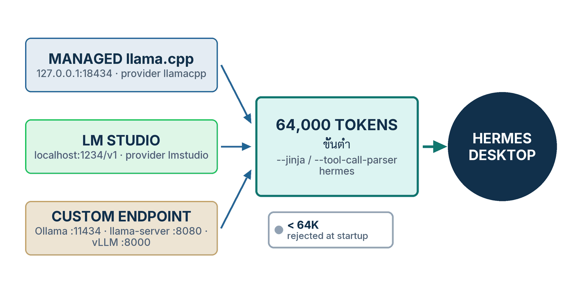

ในบทความนี้
- 1. Three Roads to a Local Model
- 2. Two Rules No Local Model May Break
- 3. Which Model Fits Your Memory
- 4. Path A — One Click: the Managed llama.cpp Runtime
- 5. Path B — LM Studio
- 6. Path C — Custom Endpoint: Ollama, llama-server, vLLM
- 7. When It Goes Wrong
- 8. Local First, Cloud as the Safety Net
- 9. สรุป
In this post
- 1. Three Roads to a Local Model
- 2. Two Rules No Local Model May Break
- 3. Which Model Fits Your Memory
- 4. Path A — One Click: the Managed llama.cpp Runtime
- 5. Path B — LM Studio
- 6. Path C — Custom Endpoint: Ollama, llama-server, vLLM
- 7. When It Goes Wrong
- 8. Local First, Cloud as the Safety Net
- 9. Summary
🤔 ถ้าเครื่องบนโต๊ะเราแรงพอจะรันโมเดลขนาด 27B ได้อยู่แล้ว ทำไมไฟล์ของนักศึกษา สัญญาจ้าง หรือข้อมูลคนไข้ ยังต้องเดินทางออกไปหา API ของใครก็ไม่รู้?
ตอนที่แล้ว — #1 Install & First Run — เราติดตั้ง Hermes Desktop จนส่งข้อความแรกได้ และเห็นว่าทุกอย่างลงมาอยู่ใน ~/.hermes เดียวกับ CLI ตอนนั้นโมเดลที่ตอบเรายังเป็นโมเดลบนคลาวด์ ตอนนี้เราจะย้ายมันลงมาไว้บนเครื่องของเราเอง — และนี่คือตอนที่ผมคิดว่าคนไทยในสายมหาวิทยาลัย โรงพยาบาล และหน่วยงานรัฐควรอ่านมากที่สุด เพราะมันคือคำตอบของคำถามเรื่องข้อมูลที่เราหลบไม่ได้
คำตอบหนึ่งบรรทัด: Hermes มี สามทางไปสู่โมเดลบนเครื่อง — managed llama.cpp runtime ที่ติดตั้งได้จากหน้า Settings, LM Studio ที่เป็น provider ในตัว และ Custom endpoint สำหรับ Ollama/llama-server/vLLM — แต่ทั้งสามทางต้องผ่านประตูเดียวกัน คือ context อย่างน้อย 64,000 token และ flag ที่ทำให้ server ส่ง tool call ออกมาในรูปที่ agent อ่านออก ตอนนี้จะพาเดินทีละทาง พร้อมคำสั่งจริงที่ผมดึงจากเอกสารต้นทางเมื่อวันที่ 7 กันยายน 2026
1. Three Roads to a Local Model
ตอบตรง ๆ ก่อน: Hermes ไม่ได้มีวิธี "ต่อโมเดลบนเครื่อง" วิธีเดียว แต่มีสามวิธีที่ต่างกันจริง ๆ ทั้งในสิ่งที่คุณต้องคลิก ในสิ่งที่มันเขียนลง config.yaml และในระดับความคุมได้ที่คุณจะได้กลับมา เลือกผิดทางไม่ได้แปลว่าใช้ไม่ได้ แต่แปลว่าคุณจะไปเจอปัญหาคนละชุดกัน
{kind=link}

- ทาง A — managed llama.cpp runtime: เปิด
Settings → Providers → Local Modelsในตัวแอป Hermes จะโหลด llama.cpp build ที่ตรงกับฮาร์ดแวร์ของคุณ เลือกโมเดลจาก catalog ที่ถูกตีราคากับเครื่องคุณไว้แล้ว แล้วรันเซิร์ฟเวอร์ให้เอง — ผลลัพธ์ในคอนฟิกคือmodel.provider: llamacppพร้อมบล็อกlocal_runtime:[1] - ทาง B — LM Studio: เป็น provider ชั้นหนึ่ง ของ Hermes ชื่อ
lmstudioเลือกจากhermes model→ "LM Studio" ปลายทางปริยายคือhttp://localhost:1234/v1และ Hermes จะไล่ดูโมเดลที่โหลดอยู่ให้เอง[2] - ทาง C — Custom endpoint:
model.provider: custom+model.base_urlชี้ไปที่ server อะไรก็ได้ที่พูด/v1/chat/completionsได้ — เอกสารระบุชื่อไว้ตรง ๆ ทั้ง Ollama, vLLM, llama.cpp server, SGLang, LocalAI และ Jan[2]
สิ่งที่ทั้งสามทางมีร่วมกันคือประโยคเดียวในหน้า Custom & Self-Hosted ของเอกสาร: "Hermes Agent works with any OpenAI-compatible API endpoint. If a server implements /v1/chat/completions, you can point Hermes at it."[2] นั่นแปลว่าสถาปัตยกรรมของ Hermes ไม่ได้ผูกกับผู้ให้บริการรายใด และไม่ได้ผูกกับโมเดล Hermes ของ Nous เองด้วย — เรื่องนี้จะกลับมาอีกครั้งในหัวข้อที่ 3
ทาง A เพิ่งมาใหม่และเป็นทางที่ "ไม่ต้องรู้อะไรเลย" มากที่สุด หน้าเอกสาร Local Models เขียนสัญญาไว้ชัดว่า "Nothing leaves your computer: no account, no API key, and no network access after a model is downloaded." — ไม่มีอะไรออกจากเครื่องคุณ ไม่ต้องมีบัญชี ไม่ต้องมี API key และไม่ต้องต่อเน็ตอีกเลยหลังโหลดโมเดลเสร็จ[1] สำหรับหน่วยงานที่ต้องตอบคำถาม PDPA ประโยคนี้มีน้ำหนักมากกว่าตัวเลข benchmark ใด ๆ
ส่วนเหตุผลว่าทำไมองค์กรถึงควรลงมาขั้นนี้ ผมเขียนไว้เต็ม ๆ แล้วใน #9 Models & Cost — ทั้งบันไดห้าขั้นตั้งแต่ Nous Portal ลงมาถึง GPU ของเราเอง และคำถาม PDPA ที่องค์กรไทยหนีไม่พ้น ตอนนี้เป็นภาคปฏิบัติของขั้นล่างสุดของบันไดนั้น: อะไรที่ต้องคลิก อะไรที่ต้องพิมพ์ และอะไรที่ต้องเช็กว่าทำงานจริง
2. Two Rules No Local Model May Break
ตอบตรง ๆ ก่อน: ไม่ว่าคุณจะเดินทางไหน มีกฎสองข้อที่ละเมิดไม่ได้ ข้อแรกเป็นตัวเลขแข็ง ๆ — context อย่างน้อย 64,000 token ถ้าน้อยกว่านั้น Hermes ปฏิเสธตั้งแต่ตอนเริ่ม ข้อที่สองเป็นเรื่องรูปแบบ — server ต้องแปลง tool call ของโมเดลให้เป็นโครงสร้างที่ agent อ่านออก ไม่ใช่ปล่อยออกมาเป็นข้อความธรรมดา
กฎข้อที่ 1 — 64,000 token หรือไม่ต้องเริ่ม
เอกสารหน้า Providers เขียนไว้ตรง ๆ ว่า "Hermes Agent requires at least 64,000 tokens of context for agent use with tools. Smaller windows are rejected at startup because the system prompt, tool schemas, and working conversation state need enough room for reliable multi-step workflows."[2] แปลเป็นภาษาที่ใช้งานได้คือ: system prompt กับ schema ของเครื่องมือกินที่ไปแล้วก้อนใหญ่ก่อนที่คุณจะพิมพ์อะไรเลย ถ้าหน้าต่างเล็กกว่านี้ agent จะไม่เหลือที่ให้ทำงานหลายขั้นตอนได้จริง
-np เพื่อแบ่ง slot เอกสารเตือนว่า context จะถูกหารตามจำนวน slot — -c 64000 -np 4 เหลือ slot ละ 16k ซึ่งต่ำกว่าเกณฑ์ทันที[2]
ฝั่ง managed runtime กฎข้อนี้ถูกฝังไว้ในโค้ดเลย ไม่ต้องตั้งเอง เอกสารเขียนว่า "Every recommended model gets at least a 64K context window" และเมื่อโมเดลใหญ่เกินหน่วยความจำ GPU Hermes จะย้ายส่วนเกินลง RAM ระบบ "in the order that hurts least (expert weights first, never the attention cache)" — คือยอมช้าลงเพื่อรักษาสัญญาเรื่อง context ไว้[1] ในซอร์สโค้ดของ local_runtime ค่านี้เขียนเป็นค่าคงที่ชื่อ FLOOR เท่ากับ 64 × 1024 = 65,536 token[12]
กฎข้อที่ 2 — tool call ต้องออกมาในรูปที่ agent แกะได้
อาการของการละเมิดกฎข้อนี้จำง่ายมาก เพราะมันไม่ใช่ error แต่เป็นคำตอบที่ดู "เกือบถูก": โมเดลพิมพ์ JSON แบบ {"name": "web_search", ...} ออกมาเป็นข้อความ แทนที่จะไปเรียกเครื่องมือจริง ๆ[2] ตารางแก้ปัญหาในเอกสารระบุ flag ต่อ server ไว้ครบ:
- llama.cpp / llama-server — เติม
--jinjaเอกสารเขียนไว้แรงมากว่า "Without--jinja, llama-server ignores thetoolsparameter entirely." ตรวจได้ที่http://localhost:8080/props— ต้องเห็นฟิลด์chat_template[2] - vLLM —
--enable-auto-tool-choice --tool-call-parser hermesโดย--enable-auto-tool-choiceจำเป็นเพราะ Hermes ใช้tool_choice: "auto"เป็นค่าปริยาย ส่วนชื่อ parser เปลี่ยนตามตระกูลโมเดล (hermes,llama3_json,mistral,deepseek_v3,xlam,pythonic)[2] - SGLang —
--tool-call-parser qwen(หรือllama3,llama4,deepseekv3,mistral,glmตามตระกูลโมเดล) ถ้าไม่ใส่ tool call จะกลับมาเป็นข้อความล้วน[2] - Ollama — เปิดอยู่แล้วโดยปริยาย สิ่งที่ต้องเช็กคือโมเดลรองรับหรือเปล่า ด้วย
ollama show <model-name>[2] - LM Studio — ต้องเป็นเวอร์ชัน 0.3.6 ขึ้นไป และเลือกโมเดลที่ผ่านการฝึก tool calling มาโดยตรง (LM Studio จะติดป้าย tool ให้เห็น)[2]
ข้อสังเกตที่ผมอยากให้ติดไว้: กฎสองข้อนี้เป็นเรื่องของ server ไม่ใช่เรื่องของโมเดล คุณอาจเลือกโมเดลที่เก่งเรื่อง tool call มาก แต่ถ้าลืม --jinja ผลลัพธ์จะเหมือนกับที่คุณเลือกโมเดลผิด และเวลาที่เสียไปกับการโทษโมเดลผิดตัวนั้นแพงกว่าการพิมพ์ flag เพิ่มหกตัวอักษรมาก
3. Which Model Fits Your Memory
ตอบตรง ๆ ก่อน: เอกสารของ Nous ไม่ได้แนะนำโมเดลเดียว แต่แนะนำคนละชุดตามทางที่คุณเลือก — catalog ของ managed runtime มีสี่ตัว, คู่มือ Ollama แนะนำ gemma4:31b ตัวเดียว และคู่มือ Mac แนะนำ Qwen3.5-9B ตารางข้างล่างรวมทั้งสามชุดไว้ให้เทียบด้วยเกณฑ์เดียวกัน
ก่อนอ่านตาราง มีกลไกหนึ่งที่ควรรู้ก่อน: ในทาง A คุณไม่ต้องเดาว่าโมเดลไหนพอดีกับเครื่อง เพราะเอกสารระบุว่าทุกโมเดลใน catalog ถูก "priced against your machine before you download anything" แล้วแสดงผลเป็นสามสี — เขียว (Fits your GPU) เหลือง (Uses system RAM คือรันได้แต่ช้าลง) และแดง (Too big for this machine) โดยตัวที่ไม่พอดีก็ยังแสดงอยู่พร้อมเหตุผล เพื่อให้รู้ว่าถ้าอัปเกรดเครื่องแล้วจะได้อะไรเพิ่ม[1]
| Model | Where recommended | Size on disk | Memory needed | Tool calling |
|---|---|---|---|---|
Qwen3.8 27Bqwen3.8-27b |
catalog ของ managed runtime — unsloth/Qwen3.8-27B-GGUF quant UD-Q4_K_M |
≈15.3 GiB + ตัวอ่านภาพ (mmproj) อีก ≈0.87 GiB | GPU 8 GB ขึ้นไปรันรุ่นเล็กได้สบาย 16 GB ขึ้นไปรันรุ่น 27–35B ได้คุณภาพสูง | ได้ — เซิร์ฟเวอร์ที่ Hermes รันให้ ใส่ --jinja ไว้เสมอ |
Qwen3.6 35B-A3Bqwen3.6-35b-a3b |
catalog — unsloth/Qwen3.6-35B-A3B-MTP-GGUF ตัวเดียวใน catalog ที่ติดธง validated |
≈21.1 GiB + mmproj ≈0.84 GiB | อยู่ในกลุ่ม 27–35B ตามเอกสารจึงควรมี VRAM 16 GB ขึ้นไป | ได้ — เงื่อนไขเดียวกับข้างบน |
Qwen3.8 Flash Nextqwen3.8-flash-next |
catalog — unsloth/Qwen3.8-Flash-Next-GGUF quant UD-Q4_K_XL แยกเป็น 4 ไฟล์ |
≈103.7 GiB (รวมทั้งสี่ไฟล์) | คำบรรยายใน catalog เขียนว่า "needs a very large GPU to run well" | ได้ — เงื่อนไขเดียวกับข้างบน |
DeepSeek V4 Flashdeepseek-v4-flash |
catalog — unsloth/DeepSeek-V4-Flash-0731-GGUF แยกเป็น 5 ไฟล์ พร้อมโมเดลร่างอีกก้อน |
≈144.4 GiB + draft model ≈10.1 GiB | คำบรรยายใน catalog เขียนว่า "for machines with 128GB+ memory" | ได้ — เงื่อนไขเดียวกับข้างบน |
| gemma4:31b | คู่มือ "Run Hermes Locally with Ollama" (ทาง C) | ~20 GB (ตัวเลขของคู่มือ) | RAM 24 GB ขึ้นไป | ได้ — และคู่มือระบุว่าเป็นตัวเดียวในตารางนั้นที่ tool calling เชื่อถือได้ |
Qwen3.5-9B quant Q4_K_M |
คู่มือ "Run Local LLMs on Mac" (Apple Silicon, ทาง C) | 5.3 GB (ตัวเลขของคู่มือ) | ~10 GB ที่ context 128K ถ้าบีบ KV cache เป็น 4-bit | คู่มือไม่ได้ระบุ — ถ้ารันผ่าน llama-server ต้องใส่ --jinja อยู่ดี |
วิธีอ่านตารางนี้ที่ผมแนะนำ: ดูคอลัมน์ Memory needed ก่อนคอลัมน์อื่นเสมอ เพราะมันคือข้อจำกัดที่เถียงไม่ได้ ตัวเลข "ขนาดบนดิสก์" เป็นแค่ครึ่งเดียวของเรื่อง — อีกครึ่งคือ KV cache ที่โตตาม context คู่มือ Mac ยกตัวอย่างชัดที่สุดว่าโมเดล 9B ที่ context 128K ถ้าใช้ KV cache แบบ f16 จะกิน ~16 GB แต่ถ้าบีบเป็น q8_0 เหลือ ~8 GB และ q4_0 เหลือ ~4 GB[4] นี่คือเหตุผลที่เครื่อง 8 GB รันโมเดล 9B ได้จริง และเป็นเหตุผลที่ทาง A จัดการเรื่องนี้ให้เองโดยไม่เปิดปุ่มให้เราหมุน
ตัวเลขขนาดของสี่โมเดลใน catalog ผมคำนวณเองจากฟิลด์ size_bytes ใน hermes_cli/local_runtime/catalog.json บน main ณ วันที่ 7 กันยายน 2026 ไม่ใช่ตัวเลขที่เอกสารพิมพ์ไว้ — และเอกสารเองก็เตือนว่า catalog เป็น "a curated starting point, not a boundary" เพราะหน้าเดียวกันมีส่วน Find more models ที่ค้นทั้ง Hugging Face และมีปุ่ม Add model file สำหรับไฟล์ .gguf ที่มีอยู่แล้วบนดิสก์[1][12]
💡 สิ่งที่ไม่มีในตารางนี้: ไม่มีโมเดล Hermes ของ Nous เองอยู่เลยสักตัว — catalog ของ managed runtime เป็น Qwen กับ DeepSeek, คู่มือ Ollama เป็น Gemma, คู่มือ Mac เป็น Qwen และหน้า Providers ยกตัวอย่างด้วยqwen2.5-coder:32bเอกสารการใช้งานของ Hermes Agent ไม่มีหน้าไหนแนะนำให้เอา Hermes 3/4 มารันเป็นโมเดลท้องถิ่นสำหรับงาน tool use เลย ชื่อhermesที่โผล่ใน--tool-call-parser hermesคือชื่อรูปแบบของ tool call ไม่ใช่ชื่อโมเดลที่ต้องใช้ — อย่าสับสนสองเรื่องนี้เวลาเลือกซื้อ GPU
4. Path A — One Click: the Managed llama.cpp Runtime
ตอบตรง ๆ ก่อน: ทางนี้สั้นที่สุด — สี่คลิกจบ ติดตั้ง runtime, เลือกโมเดล, กด Download, กด Use แล้วแชตใหม่จะวิ่งบนโมเดลในเครื่องทันที เอกสารสรุปเองว่า "That's the whole flow." เซิร์ฟเวอร์จะสตาร์ตและหยุดพร้อมกับ Hermes และการสลับกลับไปใช้โมเดลบนคลาวด์เป็นแค่คลิกเดียวใน model picker[1]
43e67d87 ("feat: local models — managed llama.cpp runtime with one-click desktop setup") ซึ่งหลัง release ที่ติดแท็กล่าสุด คือ v2026.8.31 (Hermes Agent v0.21.0, 31 สิงหาคม 2026) และในบันทึกการออกรุ่นนั้นไม่มีคำว่า local models เลย[11][12] ผมจึงไปตรวจของจริงในวันที่เขียน: หน้าดาวน์โหลด Hermes Desktop เสิร์ฟไฟล์ติดตั้งด้วยพารามิเตอร์ build=06402ecb7ca5 ซึ่งเป็น commit ลงวันที่ 6 กันยายน 2026 และอยู่หลัง 43e67d87 ในสายเดียวกัน (นำหน้าอยู่ 5,139 commit และไม่ตามหลังเลย) — แปลว่าแอปที่โหลดวันนี้มีฟีเจอร์นี้แล้ว แม้เลขเวอร์ชันที่หน้าเว็บยังเขียนว่า v0.21.0 อยู่[10] ถ้าเปิด Settings แล้วไม่เจอ Local Models แปลว่าแอปของคุณเก่ากว่านั้น — hermes update จะดึงโค้ดล่าสุดและติดตั้ง dependency ใหม่ให้[5] หรือข้ามไปใช้ทาง B ซึ่งไม่ผูกกับรุ่นของแอปเลย
- เปิด
Settings → Providers → Local Models(หรือเลือก Run models locally ตั้งแต่ตอน onboarding) — ในเอกสารหน้า Desktop ระบุว่า Providers pane มี Local Models view สำหรับ "installs and manages an on-device llama.cpp runtime" อยู่[6] - กด Install runtime คุณควรเห็นการดาวน์โหลดขนาดไม่กี่ร้อย MB — เอกสารบอกว่า Hermes โหลด llama.cpp build ทางการที่ตรงกับฮาร์ดแวร์ ตรวจสอบไฟล์ แล้วดูแลอัปเดตให้เอง (Windows/Linux ใช้ CUDA หรือ CPU, macOS ใช้ Metal บน Apple Silicon, ส่วน Vulkan ไว้สำหรับการ์ด AMD)[1]
- เลือกโมเดลจาก catalog โดยดูสีของ Memory fit เป็นหลัก — เลือกตัวที่ขึ้นเขียวว่า Fits your GPU ก่อนเสมอ อย่าเพิ่งเลือกตัวเหลือง Uses system RAM ในการทดลองครั้งแรก
- กด Download แล้วรอ ระหว่างรอให้สังเกตว่าเอกสารระบุว่าไฟล์โมเดลถูกตรวจขนาดเป็นไบต์ระหว่างโอน ถ้าโหลดไม่ครบไฟล์จะถูกลบและรายงาน ไม่ถูกนำไปใช้ครึ่ง ๆ กลาง ๆ[1]
- กด Use คุณควรเห็นว่าแชตใหม่เปลี่ยนไปใช้โมเดลนี้ — เอกสารเขียนว่า "New chats now run on the local model."[1]
- ส่งข้อความทดสอบที่ต้องใช้เครื่องมือ ไม่ใช่แค่ทักทาย เช่นประโยคที่คู่มือ Ollama ใช้เอง: "List all Python files in this directory and count the lines of code in each" — ถ้าเห็น agent เรียก terminal tool จริง แปลว่ากฎข้อที่สองผ่านแล้ว[3]
- ยืนยันจากฝั่งไฟล์ด้วย
grep -A3 local_runtime ~/.hermes/config.yamlคุณควรเห็นenabled: trueในบล็อกนั้น เพราะเอกสารระบุว่าปุ่ม Use เป็นตัวตั้งค่านี้ให้เอง[1]
บล็อกที่คุณจะเห็นในไฟล์คอนฟิก หน้าเอกสารพิมพ์ไว้แบบนี้ทั้งบล็อกพร้อมคอมเมนต์:
# ~/.hermes/config.yaml — ส่วนที่ปุ่ม Use เขียนให้ (คัดลอกจากหน้าเอกสาร Local Models)
local_runtime:
enabled: false # true = start the managed server with Hermes.
# The desktop "Use" button sets this automatically.
backend: auto # auto | cuda | metal | vulkan | hip | cpu
tag: b10362 # pinned llama.cpp release; Hermes updates it with
# each release after re-validationส่วนการเลือกโมเดลนั้นไม่มีคีย์พิเศษอะไรเลย เอกสารเขียนว่ามันใช้ model.provider: llamacpp คู่กับ model.default — "the same shape as every other provider" ไฟล์โมเดลและ runtime อยู่ใต้ Hermes home ในโฟลเดอร์ models/ และ runtimes/llamacpp/[1] ในโค้ด ตัว supervisor ผูกเซิร์ฟเวอร์ไว้ที่ 127.0.0.1 พอร์ตปริยาย 18434 (ถ้าพอร์ตชนจะเปลี่ยนเป็นพอร์ตว่างอัตโนมัติ) และสั่ง llama-server ด้วย --jinja เสมอ ซึ่งเป็นเหตุผลที่คอลัมน์ Tool calling ของสี่โมเดลในตารางที่ 1 เป็น "ได้" ทั้งแถว[12] อีกค่าที่มาจากโค้ดคือการปล่อยโมเดลที่ไม่ได้ใช้ออกจากหน่วยความจำหลังนิ่งครบ 15 นาที ซึ่งตรงกับที่เอกสารเขียนไว้[1]
สองบั๊กของสัปดาห์แรกที่ควรรู้ก่อนกด
ฟีเจอร์นี้เพิ่งอายุไม่ถึงสัปดาห์ตอนที่ผมเขียน และมี issue เปิดค้างอยู่สองใบที่กระทบคนใช้จริงโดยตรง ทั้งคู่ยังเปิดอยู่เมื่อผมตรวจในวันที่ 7 กันยายน 2026:
- ตัวเลือกอัตโนมัติเลือกโมเดลใหญ่เกินเครื่อง — issue #102865 (4 กันยายน 2026) รายงานจากโน้ตบุ๊ก Linux ที่มี RTX 4070 Laptop VRAM 8 GiB กับ RAM 30 GiB ว่า catalog เลือก
qwen3.6-35b-a3bให้อัตโนมัติแล้วสร้าง preset ที่ctx-size = 65536ผลคือ RAM เต็ม ระบบเริ่ม swap และเดสก์ท็อปทั้งเครื่องค้างจนต้องกดรีบูต ผู้รายงานสรุปสั้น ๆ ว่า "Working set >> available RAM → kernel swaps… → full desktop freeze" — ถ้าเครื่องคุณมี VRAM 8 GB หรือน้อยกว่า ให้เลือกโมเดลด้วยมือ อย่าเชื่อการเลือกอัตโนมัติ[13] - Linux + NVIDIA เลือก backend อัตโนมัติแล้วพัง — issue #103949 (5 กันยายน 2026) ชี้ว่า
select_backend()คืนค่าcudaสำหรับการ์ด NVIDIA ทุกใบที่ไม่ใช่ macOS รวมทั้ง Linux แต่ llama.cpp ไม่มีไฟล์ prebuilt CUDA สำหรับ Linux จึงได้ errorBinaryResolutionError: no prebuilt linux CUDA assetทางแก้ที่ผู้รายงานทดสอบจนใช้งานได้จริงคือตั้งlocal_runtime.backend: vulkanด้วยมือ[14]
5. Path B — LM Studio
ตอบตรง ๆ ก่อน: ถ้าคุณอยากได้หน้าจอกราฟิกสำหรับจัดการโมเดล และอยากให้ Hermes มองเห็นโมเดลที่โหลดไว้เองโดยไม่ต้องพิมพ์ URL ทาง B คือคำตอบ LM Studio ไม่ใช่ custom endpoint แต่เป็น provider ชั้นหนึ่งชื่อ lmstudio — เลือกจากเมนู hermes model ได้ตรง ๆ และไม่ผูกกับรุ่นของ Hermes Desktop เหมือนทาง A[2]
- ติดตั้ง LM Studio แล้วดาวน์โหลดโมเดล GGUF สักตัวที่ผ่านการฝึก tool calling มา — เอกสารระบุตระกูลที่ LM Studio ตรวจจับให้อัตโนมัติไว้ว่า Qwen 2.5, Llama 3.x, Mistral และ Hermes โดยต้องเป็น LM Studio 0.3.6 ขึ้นไป[2]
- เปิดเซิร์ฟเวอร์จากแท็บ Developer (ปุ่ม Start Server) หรือใช้บรรทัดคำสั่ง
lms server startคุณควรเห็นว่ามันขึ้นที่พอร์ต 1234[2] - ตั้ง context ให้ถึงเกณฑ์ก่อนโหลดโมเดล — คลิกไอคอนรูปเฟืองข้าง model picker ตั้ง "Context Length" เป็นอย่างน้อย 64000 แล้วโหลดโมเดลใหม่ให้ค่ามีผล หรือใช้
lms load model-name --context-length 64000[2] - ไม่แน่ใจว่าเครื่องรับไหว ให้ลองประเมินก่อนด้วย
lms load model-name --context-length 64000 --estimate-onlyถ้าเครื่องรับ 64000 ไม่ไหว เอกสารแนะนำให้เปลี่ยนไปใช้โมเดลเล็กลงที่มี context ยาวกว่า แทนที่จะลด context ลงต่ำกว่าเกณฑ์[2] - ต่อฝั่ง Hermes: บนเดสก์ท็อปตั้งค่าปริยายที่
Settings → Modelซึ่งเอกสารระบุว่าเป็นที่เดียวที่เขียนค่าปริยายของ profile จริง ๆ ส่วนใน terminal ให้รันhermes modelแล้วเลือก "LM Studio" กด Enter ผ่าน URL ปริยายhttp://localhost:1234/v1แล้วเลือกโมเดลจากรายการที่มันค้นเจอ[2][6] - ทดสอบด้วยคำสั่งที่ต้องใช้เครื่องมือ ไม่ใช่คำถามความรู้ทั่วไป — ให้มันไล่ไฟล์ในโฟลเดอร์แล้วนับบรรทัด ถ้ามันตอบเป็น JSON ดิบแทนที่จะลงมือทำ ให้ย้อนกลับไปดูกฎข้อที่สองในหัวข้อที่ 2
# เปิดเซิร์ฟเวอร์และโหลดโมเดลด้วย context 64K (คำสั่งจากหน้า Providers)
lms server start # Starts on port 1234
lms load qwen2.5-coder --context-length 64000
# ถ้าใช้โหมด Just-In-Time / Auto-Evict ของ LM Studio ให้ Hermes เลิกโหลดโมเดลล่วงหน้า
hermes config set model.lmstudio_load_mode jit
# กลับเป็นค่าปริยาย (โหลดล่วงหน้าเอง)
hermes config set model.lmstudio_load_mode explicitสองเรื่องที่ควรรู้เพิ่ม เรื่องแรกคือคีย์: ค่าปริยายของปลายทางคือ http://localhost:1234/v1 เปลี่ยนได้ด้วยตัวแปรสภาพแวดล้อม LM_BASE_URL[8] ส่วน LM_API_KEY ใส่เฉพาะกรณีที่คุณเปิด auth บนเซิร์ฟเวอร์ของ LM Studio เอง[2] เรื่องที่สองคือพฤติกรรมเรื่อง context ที่ละเอียดกว่าที่คิด — เอกสารเขียนว่า Hermes จะเคารพค่า context ของโมเดลที่โหลดค้างอยู่แล้ว และในโหมดปริยาย explicit มันจะไม่ส่ง context_length ไปเลยถ้าคุณไม่ได้ตั้งไว้ฝั่ง Hermes เพื่อให้ LM Studio ใช้ค่าของตัวเอง แล้วค่อยอ่านค่าที่ LM Studio รายงานกลับมาหลังโหลดเสร็จ[2] พูดอีกอย่างคือ ถ้าคุณตั้ง 64000 ใน LM Studio ไว้แล้ว คุณไม่ต้องไปตั้งซ้ำใน Hermes
6. Path C — Custom Endpoint: Ollama, llama-server, vLLM
ตอบตรง ๆ ก่อน: ทางนี้คุมได้มากที่สุดและใช้ได้กับทุกอย่าง เพราะมันไม่ใช่การรองรับ "ผลิตภัณฑ์" ใดเป็นพิเศษ แต่เป็นการชี้ Hermes ไปที่ URL ที่พูดภาษา OpenAI ได้ ขั้นตอนฝั่ง Hermes เหมือนกันหมดไม่ว่าปลายทางจะเป็นอะไร ต่างกันแค่ URL พอร์ต และ flag ที่คุณต้องใส่ตอนสตาร์ต server
- รัน
hermes modelจาก terminal (ไม่ใช่/modelในหน้าแชต — เอกสารเตือนไว้ว่า/modelสลับได้เฉพาะสิ่งที่ตั้งค่าไว้แล้ว เพิ่ม provider ใหม่ไม่ได้)[2] - เลือกรายการ "Custom endpoint (self-hosted / VLLM / etc.)"[2]
- ใส่ API base URL ตามเซิร์ฟเวอร์ของคุณ เช่น
http://localhost:11434/v1สำหรับ Ollama - ข้าม API key ไปได้เลยสำหรับเซิร์ฟเวอร์ในเครื่อง แล้วใส่ Model name — หรือเว้นว่างไว้ให้มันตรวจเองถ้ามีโมเดลโหลดอยู่ตัวเดียว[2]
- ใส่ Context length ให้ตรงกับค่าจริงของเซิร์ฟเวอร์ ตัวอย่างในหน้า FAQ ใช้
64000พร้อมหมายเหตุว่า "Hermes minimum; set this to match your server's actual context window" — ถ้าเว้นว่างมันจะไปตรวจเอง ซึ่งเป็นจุดที่ Ollama หลอกได้ (ดูหัวข้อที่ 7)[5]
บนเดสก์ท็อป ทางเดินที่เทียบเท่ากันอยู่ในหน้าตั้งค่า: เอกสารระบุว่าค่าปริยายของโมเดลตั้งที่ Settings → Model และเมื่อ turn ใดล้มเหลว การ์ดแจ้งเตือนจะมีปุ่ม Switch provider ที่พาไปยังหน้าเดียวกันสำหรับเรื่อง provider, endpoint, auth และ billing[6] ส่วนหน้า Local Models ก็เขียนไว้ตรงกันว่า managed runtime "is a default, not a requirement" และคุณ "point a custom endpoint at any OpenAI-compatible server for full manual control" ได้เสมอ[1]
ทีนี้ฝั่งเซิร์ฟเวอร์ สามคำสั่งข้างล่างคือสามกรณีที่พบบ่อยที่สุด ผมยกมาจากเอกสารต้นทางแบบตรงตัว เปลี่ยนแค่คอมเมนต์เป็นภาษาไทย เริ่มจาก Ollama ซึ่งเป็นกรณีที่คนพลาดมากที่สุดเพราะ context ปริยายของมันเล็กเกินเกณฑ์:
# วิธีที่ 1 — ตั้งทั้งเซิร์ฟเวอร์ด้วยตัวแปรสภาพแวดล้อม (เอกสารแนะนำวิธีนี้)
OLLAMA_CONTEXT_LENGTH=64000 ollama serve
# วิธีที่ 2 — อบค่าไว้ในโมเดลของตัวเอง ค้างถาวรต่อโมเดล
echo -e "FROM qwen2.5-coder:32b\nPARAMETER num_ctx 64000" > Modelfile
ollama create qwen2.5-coder-64k -f Modelfile
# ตรวจว่าได้ผลจริง ดูคอลัมน์ CONTEXT
ollama ps# llama-server — --jinja คือ flag ที่ขาดไม่ได้สำหรับ tool calling
./build/bin/llama-server \
--jinja -fa \
-c 64000 \
-ngl 99 \
-m models/qwen2.5-coder-32b-instruct-Q4_K_M.gguf \
--port 8080 --host 0.0.0.0
# ตรวจ context ที่เซิร์ฟเวอร์ใช้จริง
curl http://localhost:8080/props | jq '.default_generation_settings.n_ctx'# vLLM — ต้องมีสอง flag นี้ ไม่งั้น tool call จะออกมาเป็นข้อความ
vllm serve meta-llama/Llama-3.1-70B-Instruct \
--port 8000 \
--max-model-len 65536 \
--tensor-parallel-size 2 \
--enable-auto-tool-choice \
--tool-call-parser hermesตารางข้างล่างสรุปสามทางทั้งหมดให้เทียบกันในหน้าเดียว รวมทั้งสิ่งที่แต่ละทางเขียนลงคอนฟิก ซึ่งเป็นข้อมูลที่หาที่รวมไว้ยากที่สุดเวลาต้องแก้ปัญหา
| Path | What you click or type | URL / port | Config it writes | Best for |
|---|---|---|---|---|
| Managed llama.cpp (ทาง A) | Settings → Providers → Local Models → Install runtime → Download → Use |
127.0.0.1:18434 (พอร์ตปริยายในโค้ด เปลี่ยนเองถ้าชน) |
model.provider: llamacpp + model.default + บล็อก local_runtime: |
คนที่อยากได้ผลลัพธ์เร็วที่สุดโดยไม่ต้องรู้เรื่อง quantization หรือ GPU layer |
| LM Studio (ทาง B) | lms server start แล้ว hermes model → "LM Studio" |
http://localhost:1234/v1 (เปลี่ยนด้วย LM_BASE_URL) |
model.provider: lmstudio + model.default |
คนที่อยากได้ GUI จัดการโมเดล และอยากให้ Hermes ค้นโมเดลที่โหลดไว้ให้เอง |
| Ollama (ทาง C) | ollama pull แล้ว hermes model → Custom endpoint |
http://localhost:11434/v1 |
model.provider: custom + base_url + ควรใส่ context_length ด้วย |
เครื่องเดียวจบ ติดตั้งง่ายที่สุด แลกกับกับดักเรื่อง context ที่ต้องรู้ทัน |
| llama-server (ทาง C) | สั่งเองพร้อม --jinja -fa -c 64000 -ngl 99 |
http://localhost:8080/v1 |
model.provider: custom + base_url |
Mac Apple Silicon และเครื่องที่หน่วยความจำจำกัด เพราะบีบ KV cache ได้ |
| vLLM (ทาง C) | vllm serve พร้อมสอง flag เรื่อง tool call |
http://localhost:8000/v1 |
model.provider: custom + base_url + context_length |
เซิร์ฟเวอร์ GPU ขององค์กรที่ต้องรองรับหลายคนพร้อมกัน |
💡 Ollama มีสองร่างในโลกของ Hermes: Ollama ที่รันบนเครื่องคุณ ไม่ใช่ provider — มันเข้าทาง Custom endpoint ที่http://localhost:11434/v1โดยไม่ต้องใส่คีย์ ส่วน Ollama Cloud เป็น provider ชั้นหนึ่งจริง ๆ (--provider ollama-cloudพร้อมOLLAMA_API_KEY) เอกสารสรุปความต่างไว้ว่า "Use cloud for large models you can't run locally; use local for privacy or offline work." — สองอย่างนี้ตั้งค่าคนละที่ อย่าไปหา "Ollama" ในรายการ provider แล้วสงสัยว่าทำไมมันขอ API key[2]
7. When It Goes Wrong
ตอบตรง ๆ ก่อน: ปัญหาของโมเดลบนเครื่องเกือบทั้งหมดที่ผมเห็น ลงเอยที่สองเรื่อง — context ที่ไม่ใช่ค่าที่คุณคิด กับ ความเงียบตอนต้นเทิร์นที่ถูกเข้าใจผิดว่าค้าง ทั้งสองเรื่องมีอาการที่ดูเหมือน "โมเดลโง่" แต่ไม่ใช่เรื่องของโมเดลเลย
Ollama ไม่ได้ใช้ context เต็มของโมเดล
นี่คือกับดักที่เอกสารเรียกเองว่า "the #1 source of confusion" — Ollama ไม่ใช้หน้าต่าง context เต็มของโมเดลโดยปริยาย และค่าที่มันใช้ขึ้นกับ VRAM ที่มี ตารางในหน้า Providers ระบุไว้แบบนี้[2]
- VRAM น้อยกว่า 24 GB → context ปริยาย 4,096 token — ต่ำกว่าเกณฑ์ของ Hermes สิบห้าเท่า
- VRAM 24–48 GB → 32,768 token — ยังไม่ถึงเกณฑ์
- VRAM 48 GB ขึ้นไป → 256,000 token — เกินพอ แต่เป็นเครื่องที่คนส่วนใหญ่ไม่มี
ตัวเลขตรงนี้เป็นจุดที่แหล่งข้อมูลไม่ตรงกัน และผมคิดว่าควรบอกไว้ให้ชัดแทนที่จะเลือกตัวเลขที่ฟังดูดีกว่า: คู่มือ "Run Hermes Locally with Ollama" เขียนว่า "By default, Ollama uses a 2048-token context"[3] ขณะที่หน้า Providers ให้ตาราง 4,096/32,768/256,000 ตาม VRAM[2] ทั้งสองหน้าอยู่บนเว็บเดียวกันและอัปเดตคนละรอบ — ผมเคยบันทึกความไม่ตรงกันนี้ไว้แล้วใน #9 Models & Cost ตอนนั้นเทียบกับ FAQ ของ Ollama เองที่ให้ 4,096 ข้อสรุปเชิงปฏิบัติไม่เปลี่ยน: ทุกค่าที่ยกมาต่ำกว่า 64,000 ทั้งหมด ดังนั้นอย่าไปเถียงว่าค่าไหนถูก ให้ตั้งเองทุกครั้ง
สิ่งที่ทำให้กับดักนี้เจ็บคือมันเงียบ Issue #43900 (11 มิถุนายน 2026 ยังเปิดอยู่) อธิบายกลไกไว้ละเอียด: Hermes อ่านค่า context จาก metadata ของไฟล์ GGUF (เช่น 131,072 ของ Gemma 4) มาเก็บไว้ แต่ไม่ได้ส่งค่านั้นข้ามไปทางเส้นทาง /v1/chat/completions จริง ๆ เพราะฝั่ง OpenAI-compatible ของ Ollama ไม่รับฟิลด์นั้น ผลคือเมื่อบทสนทนายาวเกิน 4,096 token ทุกคำตอบจะกลับมาพร้อม finish_reason="length" เนื้อหาว่างหรือขาดกลางคัน แล้ววงจรลองใหม่ก็เอาชิ้นส่วนที่พังมาต่อกันจนได้ข้อความมั่ว ทั้งที่หน้าจอยังแสดงว่าใช้ context ไป 0 / 131.1K[15]
ซ้ำร้ายกว่านั้น การตรวจอัตโนมัติก็เชื่อไม่ได้ เพราะ FAQ ระบุว่า "Ollama's /api/show reports the model's maximum context, not the effective num_ctx you configured"[5] — Hermes จึงถามแล้วได้คำตอบที่ถูกต้องตามเอกสารของโมเดล แต่ผิดตามความจริงของเซิร์ฟเวอร์ ทางแก้เดียวที่ปลอดภัยคือตั้ง model.context_length เองให้ตรงกับค่าที่เซิร์ฟเวอร์ใช้จริง เอกสารยังไล่ลำดับการตรวจไว้ครบเก้าขั้น โดยขั้นแรกสุดคือค่าที่คุณตั้งเองใน config.yaml และขั้นสุดท้ายคือค่าปริยาย 128K สำหรับโมเดลที่ไม่รู้จัก[2]
ความเงียบตอนต้นเทิร์นคือ prefill ไม่ใช่การค้าง
เรื่องที่สองเป็นเรื่องของเวลา คู่มือ Mac อธิบายไว้ตรงที่สุดว่า Hermes ส่ง system prompt กับ schema ของเครื่องมือไปทุกครั้งที่เรียก บนฮาร์ดแวร์ที่ช้ากว่า เทิร์นแรกจึงอาจเงียบเป็นนาทีระหว่างที่โมเดลประมวลผล prompt ก้อนนั้นก่อนจะเริ่มพิมพ์ตัวอักษรแรก — "That's prefill at work, not a stalled session."[4] Hermes รู้เรื่องนี้และจัดการให้ระดับหนึ่งแล้ว: FAQ ระบุว่ามันตรวจจับปลายทางในเครื่องได้เอง แล้วผ่อนเวลาหมดอายุของสตรีมจาก 120 วินาทีเป็น 1,800 วินาที (คือ 30 นาที) พร้อมปิดการตรวจจับสตรีมนิ่ง ถ้ายังไม่พอกับ context ที่ใหญ่มาก ให้ใส่ HERMES_STREAM_READ_TIMEOUT=1800 ใน ~/.hermes/.env[5] ฝั่ง Ollama คู่มือยังแนะนำให้ตั้ง HERMES_API_TIMEOUT=1800 และคง OLLAMA_KEEP_ALIVE=24h ไว้ด้วย เพราะปริยาย Ollama จะปล่อยโมเดลออกจากหน่วยความจำหลังนิ่งห้านาที ทำให้ต้องเสียเวลาโหลดใหม่ก่อน prefill รอบถัดไป[3]
ทั้งหมดนี้ยังไม่ครอบคลุมทุกอาการ Issue #87697 (16 สิงหาคม 2026 ยังเปิดอยู่ ติดป้าย needs-repro) รายงานจาก Linux + Ollama ว่า Hermes ยกเลิกสตรีมเองภายในราว 1.5 วินาทีระหว่างที่โมเดลกำลังประเมิน prompt แล้วลองต่ออีกสี่ครั้งจนบริบทเสียหายและพ่น token <unused49> ออกมาเป็นสาย ผู้รายงานวิเคราะห์ต้นเหตุไว้ว่า Hermes ส่ง system prompt ก้อนใหญ่ราว 17,000 token จาก schema ของเครื่องมือ และการประเมิน prompt ขนาดนั้นบนฮาร์ดแวร์ในเครื่องกินเวลา 1.5–2.5 วินาทีก่อนตัวอักษรแรกโดยธรรมชาติ — ล็อกฝั่ง Ollama ที่แนบมาแสดง task.n_tokens = 16862 ตรงกับคำอธิบาย[16] ถ้าคุณเจออาการนี้ ให้รู้ไว้ว่าเป็นบั๊กที่ยังไม่ปิด ไม่ใช่การตั้งค่าของคุณผิด และเครื่องมือที่ช่วยลดขนาด prompt ก้อนนั้นได้จริงคือ hermes prompt-size ซึ่งคู่มือ Mac แนะนำไว้เอง[4]
สองการตั้งค่าที่แก้ปัญหาส่วนใหญ่ได้
- ตั้ง context เองเสมอ — เขียน
model.context_lengthลงconfig.yamlให้ตรงกับค่าที่เซิร์ฟเวอร์ใช้จริง อย่าปล่อยให้ตรวจเอง นี่คือขั้นแรกสุดของลำดับการตรวจ จึงชนะทุกแหล่งอื่น[2] - แก้ metadata ที่ผิดด้วย
model_overrides— สำหรับโมเดลท้องถิ่นที่ทะเบียนสาธารณะไม่รู้จัก คุณสมบัติที่ Hermes เดามาอาจผิดทั้งชุด บันทึกการออกรุ่น v0.21.0 อธิบายคีย์นี้ว่าให้ "patch context windows, pricing, or capabilities for any model without waiting on a release" มาจาก PR #85560 ที่ merge เมื่อ 13 สิงหาคม 2026 โดยฟิลด์ที่ตั้งได้คือcontext_window,max_output_tokens,supports_tools,supports_vision,supports_reasoningและmodel_family[11]
# ~/.hermes/config.yaml — ตั้ง context เอง แล้วปะ metadata ที่ผิดสำหรับโมเดลท้องถิ่น
model:
default: your-model
provider: custom
base_url: http://localhost:11434/v1
context_length: 64000
model_overrides:
custom:my-local-vllm:
my-llava-model:
context_window: 8192
supports_vision: true
_default: # ใช้เติมช่องว่างเท่านั้น เฉพาะโมเดลที่ catalog ไม่รู้จัก
context_window: 32768สุดท้ายคือข้อควรระวังที่ผมอยากเน้น เพราะมันวนอยู่ในเว็บบอร์ดจนหลายคนเข้าใจผิด: ในรายงานบั๊กหลายใบมีคนแนะนำให้ตั้งคีย์ชื่อ model.ollama_num_ctx คีย์นี้เป็นข้อความของผู้รายงานเท่านั้น ผมไม่พบมันในหน้าเอกสารใดของ Hermes Agent จึงไม่ควรถูกยกไปใช้ราวกับเป็นคีย์ทางการ ถ้าอยากบังคับ context ของ Ollama จริง ๆ ให้ทำที่ฝั่ง Ollama ด้วย OLLAMA_CONTEXT_LENGTH หรือ Modelfile ตามหัวข้อที่ 6 ซึ่งเป็นวิธีที่เอกสารรับรอง
8. Local First, Cloud as the Safety Net
ตอบตรง ๆ ก่อน: คุณไม่จำเป็นต้องเลือกข้าง Hermes ให้ตั้งโมเดลในเครื่องเป็นตัวหลัก แล้วให้โมเดลบนคลาวด์เป็นตาข่ายรับเวลามีปัญหาได้ — และให้ "งานข้าง ๆ" เช่นการย่อบทสนทนาหรือการอ่านภาพ ไปอยู่คนละโมเดลกับตัวหลักได้ด้วย นี่คือรูปแบบที่ผมใช้จริงกับงานที่ข้อมูลอ่อนไหวปนกับงานทั่วไป
# ~/.hermes/config.yaml — โมเดลในเครื่องเป็นหลัก คลาวด์เป็นตาข่ายรับ
model:
default: "gemma4:31b"
provider: "custom"
base_url: "http://localhost:11434/v1"
fallback_providers:
- provider: openrouter
model: anthropic/claude-sonnet-4
auxiliary:
vision: # งานอ่านภาพไปที่เซิร์ฟเวอร์อีกตัวในเครื่อง
base_url: "http://localhost:1234/v1"
api_key: "local-key"
model: "qwen2.5-vl"
delegation: # subagent ทุกตัวไปที่เซิร์ฟเวอร์ในเครื่อง
model: "qwen2.5-coder"
base_url: "http://localhost:1234/v1"
api_key: "local-key"บล็อกแรกมาจากคู่มือ Ollama โดยตรง พร้อมประโยคสรุปเจตนาไว้ว่า "This way, 90% of your usage is free (local), and only the hard tasks hit the paid API."[3] จะตั้งจากบรรทัดคำสั่งก็ได้ด้วย hermes fallback add ซึ่งใช้ตัวเลือก provider ชุดเดียวกับ hermes model และมีคำสั่งย่อย list, remove, clear ครบ[7] สามเรื่องที่ควรรู้ก่อนวางใจกลไกนี้:
- มันไม่ได้ทำงานทุกกรณี — เอกสารระบุเงื่อนไขไว้ชัด: 429 และ 500/502/503 จะสลับหลังลองซ้ำจนหมดโควตาแล้ว ส่วน 401/403/404 สลับทันทีเพราะลองไปก็ไม่มีประโยชน์ และคำตอบที่ผิดรูปหรือว่างเปล่าซ้ำ ๆ ก็นับด้วย[7]
- ขอบเขตเป็นรายเทิร์น ไม่ใช่ราย session — ทุกข้อความใหม่ของผู้ใช้จะกลับไปเริ่มที่โมเดลหลักเสมอ และภายในหนึ่งเทิร์นกลไกนี้ทำงานได้มากที่สุดครั้งเดียว เพื่อกันวงจรสลับไม่รู้จบ[7]
- มันทำให้ prompt cache หายทั้งสองทาง — เอกสารเตือนว่า cache ผูกกับโมเดล (และบนผู้ให้บริการส่วนใหญ่ผูกกับบัญชีด้วย) เมื่อสลับไปตัวสำรอง prompt ทั้งก้อนจะถูกอ่านใหม่ในราคาเต็ม และตอนกลับมาที่ตัวหลักก็อ่านใหม่อีกรอบ — session ที่เด้งไปมาจึงแพงกว่า session ที่อยู่นิ่ง ๆ อย่างรู้สึกได้[7]
สองบล็อกท้ายในตัวอย่างข้างบนเป็นคนละกลไกกัน และผมคิดว่าเป็นสองอย่างที่ถูกใช้น้อยเกินไป auxiliary.<task> คือการแยก "งานข้าง ๆ" ออกจากโมเดลหลัก เอกสารยกตัวอย่างงานอ่านภาพกับการย่อบทสนทนาไว้ตรง ๆ และย้ำว่า base_url มีลำดับสูงกว่า provider — ใส่ URL แล้วมันจะข้ามการเลือก provider ไปเลย ส่วนค่า provider: auto แปลว่า "ใช้โมเดลหลัก"[7] ส่วน delegation: คือการส่ง subagent ทุกตัวที่เกิดจาก delegate_task ไปที่โมเดลอื่น ซึ่งเป็นที่ที่ token ส่วนใหญ่ของงานหนึ่งรอบหายไป[9] — เอกสารระบุว่า subagent สืบทอด fallback chain ของแม่มาด้วย[7]
ถ้าอยากไปไกลกว่านี้ คือ "หนึ่งโมเดลต่อหนึ่ง agent" แบบแยกขาดจากกันจริง ๆ — agent ตัวหนึ่งอยู่บนโมเดลในเครื่องสำหรับงานที่มีข้อมูลส่วนบุคคล อีกตัวอยู่บนคลาวด์สำหรับงานที่ต้องการความสามารถสูงสุด — กลไกที่ใช้คือ profile ซึ่งเป็น Hermes home directory แยกกันคนละอัน ตอนหน้า #3 Profiles จะพาสร้างทีละขั้น รวมถึงการย้าย profile ข้ามเครื่อง
9. สรุป
ถ้าจะสรุปตอนนี้เป็นภาพเดียว ภาพนั้นคือรูปที่ 1: สามกล่องทางซ้ายที่ต่างกันมากในเรื่องความง่าย แต่ต้องลอดประตูบานเดียวกันก่อนถึงตัว agent — context อย่างน้อย 64,000 token และ flag ที่ทำให้ tool call ออกมาในรูปที่แกะได้ ประตูบานนี้ไม่มีทางอ้อม และเกือบทุกปัญหาที่คนรายงานเข้ามาคือปัญหาของคนที่คิดว่าตัวเองผ่านประตูไปแล้วทั้งที่ยังไม่ผ่าน
สิ่งที่ผมแนะนำให้ทำภายในสัปดาห์นี้มีสามข้อ หนึ่ง — เปิด Settings → Providers → Local Models ดูว่ามีเมนูนี้หรือยัง ถ้ามี ให้ดูสีของแต่ละโมเดลใน catalog แล้วจดไว้ว่าเครื่องคุณรันตัวไหนได้เขียวบ้าง นั่นคือเพดานจริงของฮาร์ดแวร์คุณ ไม่ใช่ตัวเลขที่ใครบอกมา สอง — ถ้าคุณใช้ Ollama อยู่แล้ว ให้รัน ollama ps เดี๋ยวนี้แล้วดูคอลัมน์ CONTEXT ผมเดาว่าหลายคนจะเจอ 4096 และจะเข้าใจทันทีว่าทำไม agent ถึง "ลืม" ตลอด สาม — ทดสอบด้วยงานที่ต้องใช้เครื่องมือจริงหนึ่งงาน ไม่ใช่การถามความรู้ เพราะ chat ได้ไม่ได้แปลว่าทำงานได้
ตอนหน้า #3 Profiles จะไปต่อที่คำถามที่เกิดขึ้นทันทีหลังจากคุณมีโมเดลสองตัวในมือ: แล้วจะให้ agent ตัวไหนใช้ตัวไหน โดยไม่ต้องมานั่งสลับคอนฟิกไปมาทุกครั้งที่เปลี่ยนงาน คำตอบคือ profile — home directory แยกกันคนละอัน ที่มี config, ความจำ, skill และโมเดลของตัวเอง
🎯 สิ่งสำคัญที่ต้องจำ
- สามทาง หนึ่งประตู = managed llama.cpp runtime, LM Studio และ Custom endpoint ต่างกันที่ความง่ายและสิ่งที่เขียนลงคอนฟิก แต่ผ่านเกณฑ์เดียวกันคือ 64,000 token และ tool call ที่แกะได้
- 64,000 token คือพื้น ไม่ใช่คำแนะนำ = หน้าต่างที่เล็กกว่านี้ถูกปฏิเสธตั้งแต่ startup และในโค้ดของ managed runtime ค่านี้คือค่าคงที่
FLOOR= 65,536 - flag คือเรื่องของ server ไม่ใช่ของโมเดล =
--jinjaสำหรับ llama.cpp,--enable-auto-tool-choice --tool-call-parser hermesสำหรับ vLLM,--tool-call-parser qwenสำหรับ SGLang และ LM Studio ต้อง 0.3.6 ขึ้นไป - ทาง A ใหม่กว่าเลขเวอร์ชัน = commit ลงวันที่ 1 กันยายน 2026 หลังแท็ก v2026.8.31 แต่ไฟล์ติดตั้งที่หน้าเว็บเสิร์ฟวันนี้ (
build=06402ecb7ca5) อยู่หลัง commit นั้นแล้ว — ตรวจที่หน้าจอ อย่าตรวจที่เลขเวอร์ชัน - Ollama หลอกเรื่อง context ได้สองชั้น = ค่าปริยายต่ำกว่าเกณฑ์ (4,096 บนเครื่องส่วนใหญ่) และ
/api/showรายงานค่าสูงสุดไม่ใช่ค่าที่ใช้จริง — ตั้งmodel.context_lengthเองทุกครั้ง - เงียบตอนแรกคือ prefill = Hermes ผ่อนเวลาหมดอายุเป็น 1,800 วินาทีเมื่อเจอปลายทางในเครื่อง อย่ารีบกด Ctrl+C
- local เป็นหลัก cloud เป็นตาข่าย =
fallback_providersทำงานรายเทิร์นและครั้งเดียวต่อเทิร์น ส่วนauxiliaryกับdelegationย้ายงานข้าง ๆ และ subagent ไปคนละโมเดลได้
อ้างอิง
ทุกแหล่งอ้างอิงตรวจสอบและเข้าถึงเมื่อ 7 กันยายน 2026 (2026-09-07) ซีรีส์นี้ใช้ป้ายกำกับหลักฐานสี่แบบ — Docs เอกสารทางการของ Hermes Agent · Release บันทึกการออกรุ่นหรือ commit/PR ที่ merge แล้ว · Issue issue หรือ PR ที่ยังเปิดอยู่ · Community แหล่งจากชุมชนที่ไม่ใช่ทางการ
- Docs Nous Research. Local Models. hermes-agent.nousresearch.com — เข้าถึง 2026-09-07. รองรับ: ขั้นตอนสี่ขั้น Settings → Providers → Local Models → Install runtime → Download → Use และประโยค "That's the whole flow." · ประโยค "Nothing leaves your computer" · การตีราคาโมเดลกับเครื่องเป็นสีเขียว/เหลือง/แดง · สัญญา 64K ต่อโมเดลที่แนะนำ และการวางส่วนเกินลง RAM แบบ expert weights first · การปล่อยโมเดลหลังนิ่ง 15 นาที · การตรวจขนาดไฟล์เป็นไบต์ระหว่างดาวน์โหลด · บล็อก
local_runtime:ทั้งบล็อกพร้อมคอมเมนต์ ·model.provider: llamacpp+model.defaultและโฟลเดอร์models/,runtimes/llamacpp/· ชุด build CUDA/Metal/Vulkan/CPU และคำแนะนำ 8 GB / 16 GB · "a curated starting point, not a boundary", Find more models, Add model file · และประโยคว่า managed runtime "is a default, not a requirement" - Docs Nous Research. Providers & Custom Endpoints. hermes-agent.nousresearch.com — เข้าถึง 2026-09-07. รองรับ: ข้อความ 64,000 token ที่ถูกปฏิเสธตั้งแต่ startup แบบคำต่อคำ · ประโยค "works with any OpenAI-compatible API endpoint" · ตาราง flag ต่อ server และประโยค "Without --jinja…" พร้อมอาการ JSON ดิบ · กับดัก
-c 64000 -np 4· คำสั่ง llama-server, vllm serve, ollama serve, Modelfile และollama psทั้งหมด · ตาราง context ปริยายของ Ollama ตาม VRAM 4,096/32,768/256,000 และประโยค "the #1 source of confusion" · เมนู "Custom endpoint (self-hosted / VLLM / etc.)" และคำเตือนhermes modelเทียบ/model· LM Studio ในฐานะ providerlmstudio,lms server start,lms load … --context-length 64000 --estimate-only, ขั้นตอนไอคอนเฟือง,model.lmstudio_load_mode, พฤติกรรมโหมด explicit และเงื่อนไข 0.3.6 · ลำดับการตรวจ context เก้าขั้นและค่าปริยาย 128K · และความต่างระหว่าง local Ollama กับ Ollama Cloud - Docs Nous Research. Run Hermes Locally with Ollama — Zero API Cost. hermes-agent.nousresearch.com — เข้าถึง 2026-09-07. รองรับ: แถว
gemma4:31bในตารางโมเดล (~20 GB, RAM 24+ GB, tool calling ได้) และประโยคว่าเป็นตัวเดียวที่ tool calling เชื่อถือได้ · ประโยค "By default, Ollama uses a 2048-token context" · ModelfilePARAMETER num_ctx 64000·OLLAMA_KEEP_ALIVE=24hและการปล่อยโมเดลหลังนิ่งห้านาที ·HERMES_API_TIMEOUT=1800· ประโยคทดสอบ "List all Python files in this directory and count the lines of code in each" · และคอนฟิกลูกผสมพร้อมประโยค "This way, 90% of your usage is free (local)…" - Docs Nous Research. Run Local LLMs on Mac. hermes-agent.nousresearch.com — เข้าถึง 2026-09-07. รองรับ: แถว Qwen3.5-9B-Q4_K_M (5.3 GB บนดิสก์, ~10 GB ที่ context 128K พร้อม KV cache แบบบีบ) · ตาราง KV cache f16 ~16 GB / q8_0 ~8 GB / q4_0 ~4 GB · คำแนะนำให้ลด context ได้แต่ต้องไม่ต่ำกว่าเกณฑ์ 64K · คำอธิบาย prefill "That's prefill at work, not a stalled session." · และคำแนะนำให้ใช้
hermes prompt-size - Docs Nous Research. FAQ. hermes-agent.nousresearch.com — เข้าถึง 2026-09-07. รองรับ: ตัวอย่าง
hermes model→ Custom endpoint พร้อมช่อง Context length 64000 และหมายเหตุ "Hermes minimum; set this to match your server's actual context window" · ประโยคว่า/api/showของ Ollama รายงานค่าสูงสุดไม่ใช่num_ctxที่ตั้งไว้ · การผ่อน read timeout จาก 120s เป็น 1800s สำหรับปลายทางในเครื่องพร้อมการปิด stale stream detection และHERMES_STREAM_READ_TIMEOUT=1800· และคำอธิบายว่าhermes updateดึงโค้ดล่าสุดและติดตั้ง dependency ใหม่ - Docs Nous Research. Hermes Desktop. hermes-agent.nousresearch.com — เข้าถึง 2026-09-07. รองรับ: ประโยคว่า Providers settings pane มี Local Models view ที่ "installs and manages an on-device llama.cpp runtime" · ประโยคว่าค่าปริยายของโมเดลตั้งที่ Settings → Model และเป็นที่เดียวที่เขียนค่านั้น · และปุ่ม Switch provider บนการ์ดแจ้งความล้มเหลวที่พาไปหน้า provider/endpoint/auth/billing
- Docs Nous Research. Fallback Providers. hermes-agent.nousresearch.com — เข้าถึง 2026-09-07. รองรับ: คำสั่งย่อย
add,list,remove,clearของhermes fallbackและรูปร่างของfallback_providers:· เงื่อนไขที่กลไกทำงาน 429, 500/502/503, 401/403/404 และคำตอบผิดรูป · ขอบเขตรายเทิร์นและครั้งเดียวต่อเทิร์น · คำเตือนเรื่อง prompt cache ที่หายทั้งขาไปและขากลับ · รูปร่างauxiliary:พร้อมตัวอย่าง vision ที่ชี้ไปhttp://localhost:1234/v1และประโยคว่าbase_urlมีลำดับสูงกว่าprovider· และบล็อกdelegation:พร้อมข้อความว่า subagent สืบทอด fallback chain ของแม่ - Docs Nous Research. Environment Variables. hermes-agent.nousresearch.com — เข้าถึง 2026-09-07. รองรับ: ค่าปริยายของ
LM_BASE_URLคือhttp://localhost:1234/v1· และOLLAMA_BASE_URLที่เป็นปลายทางของ Ollama Cloud (ค่าปริยายhttps://ollama.com/v1) ซึ่งยืนยันว่าเป็นคนละเส้นทางกับ Ollama ในเครื่อง - Docs Nous Research. Subagent Delegation. hermes-agent.nousresearch.com — เข้าถึง 2026-09-07. รองรับ: บล็อก
delegation:ที่ชี้ไปเซิร์ฟเวอร์ในเครื่องด้วยmodel: "qwen2.5-coder",base_urlและapi_keyแบบคำต่อคำ · และประโยคที่ว่า subagent คือที่ที่ token ส่วนใหญ่ของงานหนึ่งรอบหายไป — "the children are where the tokens go — a parallel batch of subagents typically burns the large majority of a run's total tokens" - Docs Nous Research. Hermes Desktop — download page. hermes-agent.nousresearch.com — เข้าถึง 2026-09-07. รองรับ: ลิงก์ดาวน์โหลด
Hermes-Setup.dmgและHermes-Setup.exeที่ต่อท้ายด้วย?build=06402ecb7ca5ในวันที่เข้าถึง · ป้ายเวอร์ชันท้ายหน้า "Hermes Agent v0.21.0" · และรายการแพลตฟอร์ม macOS 12+, Windows 10/11, Linux ผ่าน terminal - Release Nous Research. Hermes Agent v0.21.0 (v2026.8.31) — release notes. github.com — เผยแพร่ 2026-08-31, เข้าถึง 2026-09-07. รองรับ: แท็กและวันที่ของรุ่นที่ใหม่ที่สุดในวันเขียน และข้อเท็จจริงว่าบันทึกการออกรุ่นนี้ไม่ได้กล่าวถึง managed local-model runtime เลย · คำอธิบาย
model_overridesว่า "patch context windows, pricing, or capabilities for any model without waiting on a release" พร้อมการอ้าง PR #85560 ซึ่ง merge เมื่อ 2026-08-13 และรายชื่อฟิลด์ที่ตั้งได้ - Release Nous Research. commit 43e67d87 — "feat: local models — managed llama.cpp runtime with one-click desktop setup". github.com — commit 2026-09-01, เข้าถึง 2026-09-07. รองรับ: วันที่และชื่อ commit ที่นำ managed runtime เข้ามา (117 ไฟล์) และความจริงว่ามันอยู่หลังแท็ก v2026.8.31 · การเทียบสายว่า
06402ecb7ca5นำหน้า commit นี้อยู่ 5,139 commit และไม่ตามหลังเลย · และไฟล์ที่ commit นี้เพิ่มซึ่งผมอ่านจากmainในวันเดียวกัน —hermes_cli/local_runtime/catalog.json(ชื่อ, repo, quant และsize_bytesของสี่โมเดลที่ใช้คำนวณคอลัมน์ขนาดในตารางที่ 1),supervisor.py(พอร์ตปริยาย 18434 บน 127.0.0.1,--jinjaในคำสั่งสตาร์ต, การปล่อยโมเดลหลังนิ่ง 15 นาที) และcontext_policy.py(ค่าคงที่FLOOR= 64 × 1024) - Issue NousResearch/hermes-agent. Issue #102865 — Desktop Local Models: catalog auto-pick spawns infeasible config (35B/64K ctx on 8GB VRAM+30GB RAM) → full desktop freeze via swap thrash. github.com — เปิด 2026-09-04, ยังเปิดอยู่เมื่อตรวจ 2026-09-07. รองรับ: เครื่องที่รายงาน (RTX 4070 Laptop VRAM 8 GiB + RAM 30 GiB, Linux) · การที่ catalog เลือก
qwen3.6-35b-a3bให้อัตโนมัติพร้อม presetctx-size = 65536· และประโยค "Working set >> available RAM → kernel swaps… → full desktop freeze" ที่จบด้วยการต้องรีบูตเครื่อง · ขอบเขต: เป็นรายงานของผู้ใช้ ยังไม่มีการแก้จากผู้ดูแลปรากฏในวันที่ตรวจ - Issue NousResearch/hermes-agent. Issue #103949 — local_runtime: select_backend() returns 'cuda' on Linux+NVIDIA but no Linux CUDA prebuilt exists. github.com — เปิด 2026-09-05, ยังเปิดอยู่เมื่อตรวจ 2026-09-07. รองรับ: ข้อความ error
BinaryResolutionError: no prebuilt linux CUDA asset· สาเหตุว่าselect_backend()คืนcudaให้ NVIDIA ทุกใบที่ไม่ใช่ macOS · และทางแก้ที่ผู้รายงานทดสอบแล้วคือบังคับvulkan· ขอบเขต: ทดสอบบน Ubuntu 26.04 + RTX 5070 Ti หนึ่งเครื่อง ยังไม่มี PR ที่ merge แล้วในวันที่ตรวจ - Issue NousResearch/hermes-agent. Issue #43900 — Ollama local models silently capped at 4096-token context. github.com — เปิด 2026-06-11, ยังเปิดอยู่เมื่อตรวจ 2026-09-07. รองรับ: กลไกที่ Hermes อ่านค่า context จาก GGUF (131,072 ของ Gemma 4) แต่ไม่ได้ส่ง
num_ctxข้ามเส้นทาง OpenAI-compatible · ผลลัพธ์finish_reason="length"เนื้อหาว่างหรือขาด และการต่อชิ้นส่วนที่พังจนได้ข้อความมั่ว · และหน้าจอที่ยังแสดง0 / 131.1K· ขอบเขต: เป็นรายงานของผู้ใช้ ติดป้าย P2 และยังไม่ปิด - Issue NousResearch/hermes-agent. Issue #87697 — Hermes Client cancels local LLM streams after ~1.5s during prompt evaluation. github.com — เปิด 2026-08-16, ยังเปิดอยู่เมื่อตรวจ 2026-09-07. รองรับ: การยกเลิกสตรีมที่ราว 1.5 วินาที การลองต่ออีกสี่ครั้ง และ token
<unused49>ที่ออกมาเป็นสาย · การวิเคราะห์ของผู้รายงานว่า system prompt ราว 17,000 token จาก schema ของเครื่องมือใช้เวลาประเมิน 1.5–2.5 วินาทีก่อนตัวอักษรแรก · และล็อกฝั่ง Ollama ที่แสดงtask.n_tokens = 16862· ขอบเขต: ติดป้าย needs-repro เป็นรายงานเครื่องเดียวบน Linux + Gemma 4 26B และยังไม่มีการยืนยันจากผู้ดูแล
🤔 If the machine on your desk can already run a 27B model, why do your students' files, your contracts, or your patient records still have to travel out to somebody else's API?
The previous post — #1 Install & First Run — installed Hermes Desktop up to your first message, and showed that everything lands in the same ~/.hermes the CLI uses. At that point the model answering you was still in the cloud. Now we move it down onto your own machine — and this is the post I think Thai readers in universities, hospitals and government offices should read most closely, because it is the answer to the data question we do not get to dodge.
The one-line answer: Hermes has three roads to a local model — a managed llama.cpp runtime you install from the Settings pane, LM Studio as a first-class provider, and the Custom endpoint for Ollama, llama-server and vLLM — but all three pass through the same gate: at least 64,000 tokens of context, and the flags that make the server emit tool calls in a shape the agent can parse. This post walks each road with the real commands, taken from the primary docs as I fetched them on 7 September 2026.
1. Three Roads to a Local Model
The direct answer first: Hermes does not have one way to "connect a local model" — it has three genuinely different ones, differing in what you click, in what they write into config.yaml, and in how much control you get back. Picking the wrong road does not mean it will not work; it means you will meet a different set of problems.
- Path A — the managed llama.cpp runtime: open
Settings → Providers → Local Modelsin the app, and Hermes downloads the llama.cpp build that matches your hardware, offers a catalog already priced against your machine, and runs the server for you — the result in config ismodel.provider: llamacppplus alocal_runtime:block.[1] - Path B — LM Studio: a first-class provider named
lmstudio, chosen fromhermes model→ "LM Studio", with the default endpointhttp://localhost:1234/v1; Hermes auto-discovers the models you have loaded.[2] - Path C — the Custom endpoint:
model.provider: customplusmodel.base_urlpointed at any server that speaks/v1/chat/completions— the docs name Ollama, vLLM, the llama.cpp server, SGLang, LocalAI and Jan outright.[2]
What all three share is one sentence on the Custom & Self-Hosted page of the docs: "Hermes Agent works with any OpenAI-compatible API endpoint. If a server implements /v1/chat/completions, you can point Hermes at it."[2] That means the architecture is tied to no vendor — and, as it turns out, not to Nous's own Hermes models either, a point that comes back in section 3.
Path A is the newest and the one that asks you to know the least. The Local Models page states the promise plainly: "Nothing leaves your computer: no account, no API key, and no network access after a model is downloaded." — nothing leaves your machine; no account, no API key, and no network access at all once the model is downloaded.[1] For an organisation that has to answer a PDPA question, that sentence carries more weight than any benchmark number.
The reasons an organisation should come down to this rung I wrote out in full in #9 Models & Cost — the five-rung ladder from Nous Portal down to your own GPUs, and the PDPA question no Thai organisation gets to skip. This post is the hands-on half of the bottom rung: what to click, what to type, and what to check actually works.
2. Two Rules No Local Model May Break
The direct answer first: whichever road you take, two rules cannot be broken. The first is a hard number — at least 64,000 tokens of context, and anything smaller is rejected at startup. The second is about shape — the server must turn the model's tool calls into a structure the agent can read, rather than letting them out as ordinary text.
Rule 1 — 64,000 tokens, or it will not start
The Providers page says it outright: "Hermes Agent requires at least 64,000 tokens of context for agent use with tools. Smaller windows are rejected at startup because the system prompt, tool schemas, and working conversation state need enough room for reliable multi-step workflows."[2] Translated into working terms: the system prompt and the tool schemas take a large bite before you type anything at all. A smaller window leaves the agent no room to actually run a multi-step task.
-np to split slots, the docs warn that the context is divided across them — -c 64000 -np 4 leaves 16k per slot, instantly below the floor.[2]
On the managed runtime the rule is baked into the code, so there is nothing to set. The docs state that "Every recommended model gets at least a 64K context window", and that when a model is larger than GPU memory Hermes places the overflow in system RAM "in the order that hurts least (expert weights first, never the attention cache)" — trading speed to protect the context guarantee.[1] In the local_runtime source the value is a constant named FLOOR, equal to 64 × 1024 = 65,536 tokens.[12]
Rule 2 — tool calls must come out in a shape the agent can parse
Breaking this rule has a very memorable symptom, because it is not an error but an answer that looks "almost right": the model prints JSON such as {"name": "web_search", ...} as a message instead of actually calling the tool.[2] The troubleshooting table in the docs lists the flag for every server:
- llama.cpp / llama-server — add
--jinja. The docs put it strongly: "Without--jinja, llama-server ignores thetoolsparameter entirely." Verify athttp://localhost:8080/props— thechat_templatefield must be present.[2] - vLLM —
--enable-auto-tool-choice --tool-call-parser hermes. The first is required because Hermes usestool_choice: "auto"by default; the parser name changes with the model family (hermes,llama3_json,mistral,deepseek_v3,xlam,pythonic).[2] - SGLang —
--tool-call-parser qwen(orllama3,llama4,deepseekv3,mistral,glmfor other families). Without it, tool calls come back as plain text.[2] - Ollama — enabled by default; what you must check is whether the model supports it, with
ollama show <model-name>.[2] - LM Studio — must be version 0.3.6 or later, with a model trained for native tool calling (LM Studio shows those with a tool badge).[2]
The observation I want you to keep: both rules are about the server, not the model. You can pick an excellent tool-calling model and still get exactly the symptoms of a bad one because you forgot --jinja — and the hours spent blaming the wrong component cost far more than typing six extra characters.
3. Which Model Fits Your Memory
The direct answer first: the Nous docs do not recommend one model — they recommend a different set per road. The managed runtime's catalog holds four; the Ollama guide recommends exactly one, gemma4:31b; the Mac guide recommends Qwen3.5-9B. The table below puts all three sets side by side on the same criteria.
Before the table, one mechanism worth knowing: on Path A you do not have to guess what fits, because the docs state that every catalog model is "priced against your machine before you download anything" and shown in three colours — green (Fits your GPU), amber (Uses system RAM: it works, but slower) and red (Too big for this machine). Models that do not fit stay visible with the reason, so you always know what a hardware upgrade would unlock.[1]
| Model | Where recommended | Size on disk | Memory needed | Tool calling |
|---|---|---|---|---|
Qwen3.8 27Bqwen3.8-27b |
managed runtime catalog — unsloth/Qwen3.8-27B-GGUF, quant UD-Q4_K_M |
≈15.3 GiB, plus a vision adapter (mmproj) of ≈0.87 GiB | a GPU with 8 GB+ runs the small catalog models comfortably; 16 GB+ runs the 27–35B ones at high quality | Yes — the server Hermes runs for you always carries --jinja |
Qwen3.6 35B-A3Bqwen3.6-35b-a3b |
catalog — unsloth/Qwen3.6-35B-A3B-MTP-GGUF, the only entry carrying the validated flag |
≈21.1 GiB, plus mmproj ≈0.84 GiB | in the 27–35B band, so the docs' 16 GB+ VRAM guidance applies | Yes — same reason as above |
Qwen3.8 Flash Nextqwen3.8-flash-next |
catalog — unsloth/Qwen3.8-Flash-Next-GGUF, quant UD-Q4_K_XL, split across 4 files |
≈103.7 GiB (all four files together) | the catalog's own description: "needs a very large GPU to run well" | Yes — same reason as above |
DeepSeek V4 Flashdeepseek-v4-flash |
catalog — unsloth/DeepSeek-V4-Flash-0731-GGUF, split across 5 files, with a draft model beside it |
≈144.4 GiB, plus a draft model of ≈10.1 GiB | the catalog's own description: "for machines with 128GB+ memory" | Yes — same reason as above |
| gemma4:31b | the guide "Run Hermes Locally with Ollama" (Path C) | ~20 GB (the guide's own figure) | 24+ GB of RAM | Yes — and the guide calls it the only entry in its table with reliable tool calling |
Qwen3.5-9B, quant Q4_K_M |
the guide "Run Local LLMs on Mac" (Apple Silicon, Path C) | 5.3 GB (the guide's own figure) | ~10 GB at 128K context with a 4-bit quantized KV cache | the guide does not say — and through llama-server you need --jinja regardless |
How I would read this table: look at Memory needed before anything else, because it is the constraint you cannot argue with. The size-on-disk figure is only half the story — the other half is the KV cache, which grows with context. The Mac guide makes this clearest: for a 9B model at 128K context, an f16 KV cache costs ~16 GB, q8_0 ~8 GB, and q4_0 ~4 GB.[4] That is why an 8 GB machine really can run a 9B model — and why Path A handles this for you rather than exposing a knob.
The four catalog sizes I computed myself from the size_bytes fields in hermes_cli/local_runtime/catalog.json on main as of 7 September 2026; they are not numbers the docs print. The docs themselves warn that the catalog is "a curated starting point, not a boundary" — the same page carries a Find more models section that searches all of Hugging Face, and an Add model file button for a .gguf you already have on disk.[1][12]
💡 What is not in this table: not one of Nous's own Hermes models. The managed catalog is Qwen and DeepSeek, the Ollama guide is Gemma, the Mac guide is Qwen, and the Providers page's example isqwen2.5-coder:32b. No page of the Hermes Agent documentation recommends running Hermes 3/4 weights locally for tool use. The wordhermesin--tool-call-parser hermesis the name of a tool-call format, not of a model you must use — do not conflate the two when you are costing out a GPU.
4. Path A — One Click: the Managed llama.cpp Runtime
The direct answer first: this is the shortest road — four clicks. Install the runtime, pick a model, hit Download, hit Use, and new chats run on the local model. The docs sum it up themselves: "That's the whole flow." The server starts and stops with Hermes, and switching back to a cloud provider is one click in the model picker.[1]
43e67d87 ("feat: local models — managed llama.cpp runtime with one-click desktop setup"), which is after the newest tagged release, v2026.8.31 (Hermes Agent v0.21.0, 31 August 2026) — and those release notes never mention local models at all.[11][12] So I checked the shipping artefact on the day of writing: the Hermes Desktop download page serves its installers with the parameter build=06402ecb7ca5, a commit dated 6 September 2026 that sits after 43e67d87 on the same line (5,139 commits ahead, none behind) — meaning the app you download today already carries this feature, even though the page's version label still reads v0.21.0.[10] If your Settings has no Local Models entry, your app is older than that — hermes update pulls the latest code and reinstalls dependencies[5] — or skip to Path B, which is not tied to the app's build at all.
- Open
Settings → Providers → Local Models(or choose Run models locally during onboarding) — the Desktop page of the docs states that the Providers pane holds a Local Models view that "installs and manages an on-device llama.cpp runtime".[6] - Click Install runtime. You should see a download of a few hundred MB — the docs say Hermes fetches the official llama.cpp build for your hardware, verifies it, and keeps it updated (CUDA or CPU on Windows and Linux, Metal on Apple Silicon, and Vulkan builds for AMD cards).[1]
- Pick a model from the catalog by reading the Memory fit colour first — take a green Fits your GPU row before anything else, and do not start your first experiment on an amber Uses system RAM one.
- Click Download and wait. While you wait, note that the docs say model downloads are byte-size checked during the transfer: an incomplete download is deleted and reported, never half-used.[1]
- Click Use. You should see new chats switch to this model — the docs' wording is "New chats now run on the local model."[1]
- Send a test message that requires a tool, not a greeting — for example the sentence the Ollama guide itself uses: "List all Python files in this directory and count the lines of code in each". If you watch the agent actually invoke the terminal tool, rule two has passed.[3]
- Confirm from the file side with
grep -A3 local_runtime ~/.hermes/config.yaml. You should seeenabled: truein that block, because the docs state the Use button sets it automatically.[1]
The block you will find in the config file is printed in the docs in full, comments included:
# ~/.hermes/config.yaml — what the Use button writes (copied from the Local Models page)
local_runtime:
enabled: false # true = start the managed server with Hermes.
# The desktop "Use" button sets this automatically.
backend: auto # auto | cuda | metal | vulkan | hip | cpu
tag: b10362 # pinned llama.cpp release; Hermes updates it with
# each release after re-validationModel selection needs no special key at all. The docs say it uses model.provider: llamacpp together with model.default — "the same shape as every other provider" — and that model files and runtime builds live under the Hermes home in models/ and runtimes/llamacpp/.[1] In the source, the supervisor binds the server to 127.0.0.1 on default port 18434 (falling back to a free port if that one is taken) and always launches llama-server with --jinja, which is why the Tool calling column for all four catalog models in Table 1 reads Yes.[12] The same source carries the 15-minute idle unload the docs describe.[1]
Two first-week bugs to know about before you click
The feature was less than a week old as I wrote this, and two open issues affect real users directly. Both were still open when I checked on 7 September 2026:
- The auto-pick chooses a model too big for the machine — issue #102865 (4 September 2026) reports from a Linux laptop with an RTX 4070 Laptop (8 GiB VRAM) and 30 GiB of RAM that the catalog auto-selected
qwen3.6-35b-a3band generated a preset atctx-size = 65536. RAM filled, the kernel began swapping, and the entire desktop froze until a hard reboot. The reporter's summary is blunt: "Working set >> available RAM → kernel swaps… → full desktop freeze". On 8 GB of VRAM or less, choose the model by hand rather than trusting the recommendation.[13] - Linux + NVIDIA picks a backend that cannot exist — issue #103949 (5 September 2026) shows that
select_backend()returnscudafor every NVIDIA card off macOS, Linux included, but llama.cpp ships no prebuilt Linux CUDA asset, so it fails withBinaryResolutionError: no prebuilt linux CUDA asset. The workaround the reporter tested end-to-end is to setlocal_runtime.backend: vulkanby hand.[14]
5. Path B — LM Studio
The direct answer first: if you want a graphical way to manage models and want Hermes to discover whatever you have loaded without typing a URL, Path B is the answer. LM Studio is not a custom endpoint but a first-class provider named lmstudio — pick it straight from the hermes model menu, and unlike Path A it is not tied to your Hermes Desktop build.[2]
- Install LM Studio and download a GGUF trained for tool calling — the docs name the families LM Studio auto-detects: Qwen 2.5, Llama 3.x, Mistral and Hermes, on LM Studio 0.3.6 or later.[2]
- Start the server from the Developer tab (Start Server), or from the command line with
lms server start. You should see it come up on port 1234.[2] - Set the context to the floor before loading the model — click the gear icon next to the model picker, set "Context Length" to at least 64000, then reload the model for the change to take effect; or use
lms load model-name --context-length 64000.[2] - If you are unsure the machine can hold it, estimate first with
lms load model-name --context-length 64000 --estimate-only. If 64000 will not fit, the docs advise switching to a smaller model with a longer context rather than dropping below the floor.[2] - Wire up the Hermes side: on the desktop, set the default at
Settings → Model, which the docs describe as the only place that writes a profile's real default; in a terminal, runhermes model, choose "LM Studio", press Enter to accept the default URLhttp://localhost:1234/v1, and pick one of the discovered models.[2][6] - Test with something that needs a tool, not a general-knowledge question — have it list the files in a folder and count their lines. If it answers with raw JSON instead of acting, go back to rule two in section 2.
# Start the server and load a model with a 64K context (commands from the Providers page)
lms server start # Starts on port 1234
lms load qwen2.5-coder --context-length 64000
# If you use LM Studio's Just-In-Time / Auto-Evict mode, stop Hermes preloading models itself
hermes config set model.lmstudio_load_mode jit
# Back to the default (Hermes preloads explicitly)
hermes config set model.lmstudio_load_mode explicitTwo things worth adding. The first is credentials: the default endpoint is http://localhost:1234/v1, overridable with the environment variable LM_BASE_URL,[8] while LM_API_KEY is only needed if you have turned on auth in LM Studio's own server.[2] The second is a subtler behaviour around context: the docs say Hermes preserves the context of an already-loaded LM Studio instance, and that in the default explicit mode it omits context_length entirely unless you configured one on the Hermes side, letting LM Studio apply its own model setting, and then uses only the context length LM Studio reports after loading.[2] In other words: if you have already set 64000 in LM Studio, you do not need to set it again in Hermes.
6. Path C — Custom Endpoint: Ollama, llama-server, vLLM
The direct answer first: this road gives the most control and works with everything, because it is not support for a particular product — it is pointing Hermes at a URL that speaks OpenAI. The Hermes side is identical whatever sits at the other end; only the URL, the port, and the flags you pass when starting the server change.
- Run
hermes modelfrom a terminal, not/modelinside a chat — the docs warn that/modelcan only switch between things you have already configured and cannot add a new provider.[2] - Choose the entry "Custom endpoint (self-hosted / VLLM / etc.)".[2]
- Enter the API base URL for your server — for example
http://localhost:11434/v1for Ollama. - Skip the API key for a local server, then enter the Model name — or leave it blank to auto-detect if only one model is loaded.[2]
- Enter a Context length that matches what the server really uses. The FAQ's worked example uses
64000with the note "Hermes minimum; set this to match your server's actual context window" — leave it blank and Hermes will detect it, which is exactly where Ollama can mislead it (see section 7).[5]
On the desktop the equivalent path lives in the settings: the docs place the model default at Settings → Model, and when a turn fails the error card offers a Switch provider button that jumps to the same place for provider, endpoint, auth and billing failures.[6] The Local Models page agrees from the other side — the managed runtime "is a default, not a requirement", and you can always "point a custom endpoint at any OpenAI-compatible server for full manual control".[1]
Now the server side. The three commands below are the three most common cases, taken verbatim from the primary docs with only the comments rewritten. Start with Ollama, which is where most people come unstuck, because its default context is below the floor:
# Option 1 — set it server-wide with an environment variable (the docs' recommended route)
OLLAMA_CONTEXT_LENGTH=64000 ollama serve
# Option 2 — bake it into your own model; persistent, per model
echo -e "FROM qwen2.5-coder:32b\nPARAMETER num_ctx 64000" > Modelfile
ollama create qwen2.5-coder-64k -f Modelfile
# Verify it took effect — read the CONTEXT column
ollama ps# llama-server — --jinja is the flag you cannot omit for tool calling
./build/bin/llama-server \
--jinja -fa \
-c 64000 \
-ngl 99 \
-m models/qwen2.5-coder-32b-instruct-Q4_K_M.gguf \
--port 8080 --host 0.0.0.0
# Check the context the server is really running with
curl http://localhost:8080/props | jq '.default_generation_settings.n_ctx'# vLLM — both of these flags are required, or tool calls come back as text
vllm serve meta-llama/Llama-3.1-70B-Instruct \
--port 8000 \
--max-model-len 65536 \
--tensor-parallel-size 2 \
--enable-auto-tool-choice \
--tool-call-parser hermesThe table below puts all three roads on one page, including what each writes into config — the piece of information that is hardest to find in one place when you are debugging.
| Path | What you click or type | URL / port | Config it writes | Best for |
|---|---|---|---|---|
| Managed llama.cpp (Path A) | Settings → Providers → Local Models → Install runtime → Download → Use |
127.0.0.1:18434 (the source's default port; it moves if that one is taken) |
model.provider: llamacpp + model.default + a local_runtime: block |
anyone who wants a working local model fastest, without learning quantization or GPU layers |
| LM Studio (Path B) | lms server start, then hermes model → "LM Studio" |
http://localhost:1234/v1 (change with LM_BASE_URL) |
model.provider: lmstudio + model.default |
people who want a GUI for managing models, and Hermes to discover what is loaded |
| Ollama (Path C) | ollama pull, then hermes model → Custom endpoint |
http://localhost:11434/v1 |
model.provider: custom + base_url, and you should set context_length too |
one machine, simplest possible install — at the price of the context trap you must know about |
| llama-server (Path C) | run it yourself with --jinja -fa -c 64000 -ngl 99 |
http://localhost:8080/v1 |
model.provider: custom + base_url |
Apple Silicon Macs and memory-constrained machines, because you can quantize the KV cache |
| vLLM (Path C) | vllm serve with the two tool-call flags |
http://localhost:8000/v1 |
model.provider: custom + base_url + context_length |
an organisation's GPU server that has to serve several people at once |
💡 Ollama has two identities in the Hermes world: the Ollama running on your machine is not a provider — it comes in through the Custom endpoint athttp://localhost:11434/v1with no key. Ollama Cloud, by contrast, really is a first-class provider (--provider ollama-cloudwithOLLAMA_API_KEY). The docs draw the line themselves: "Use cloud for large models you can't run locally; use local for privacy or offline work." They are configured in two different places — do not look for "Ollama" in the provider list and then wonder why it wants an API key.[2]
7. When It Goes Wrong
The direct answer first: nearly every local-model problem I have seen comes down to two things — a context window that is not the number you think it is, and silence at the start of a turn mistaken for a hang. Both present as "the model is stupid", and neither is about the model at all.
Ollama does not use the model's full context
This is the trap the docs themselves call "the #1 source of confusion" — Ollama does not use a model's full context window by default, and the value it does use depends on available VRAM. The table on the Providers page reads as follows.[2]
- Less than 24 GB of VRAM → default context 4,096 tokens — fifteen times below the Hermes floor.
- 24–48 GB → 32,768 tokens — still below the floor.
- 48 GB and above → 256,000 tokens — plenty, on a machine most people do not have.
This is a point where the sources disagree, and I would rather say so than pick the nicer number. The guide "Run Hermes Locally with Ollama" says "By default, Ollama uses a 2048-token context",[3] while the Providers page gives the 4,096 / 32,768 / 256,000 table keyed to VRAM.[2] Both pages sit on the same site and were updated on different cycles — I recorded the same disagreement in #9 Models & Cost, where the comparison was against Ollama's own FAQ figure of 4,096. The practical conclusion does not change: every one of those values is below 64,000, so do not argue about which is right — set it yourself, every time.
What makes the trap painful is that it is silent. Issue #43900 (11 June 2026, still open) documents the mechanism in detail: Hermes reads the context from the GGUF metadata (131,072 for Gemma 4, say) and stores it, but never sends that value across the /v1/chat/completions route, because Ollama's OpenAI-compatible side does not accept the field. Once the conversation passes 4,096 tokens, every answer comes back with finish_reason="length" and empty or truncated content, and the retry loop then stitches broken fragments into garbled output — while the UI still shows 0 / 131.1K of context used.[15]
Worse, auto-detection cannot save you, because the FAQ states that "Ollama's /api/show reports the model's maximum context, not the effective num_ctx you configured".[5] Hermes asks, and gets an answer that is correct about the model and wrong about the server. The only safe fix is to set model.context_length yourself to match what the server actually runs. The docs lay out the full nine-step resolution chain, in which your own value in config.yaml is step one and a 128K default for unknown models is the last resort.[2]
Silence at the start of a turn is prefill, not a hang
The second problem is about time. The Mac guide puts it most directly: Hermes sends its system prompt and tool schemas on every call, so on slower hardware the first turn can involve minutes of silence while the model processes that prompt before generating anything — "That's prefill at work, not a stalled session."[4] Hermes knows this and already compensates: the FAQ states that it auto-detects local endpoints and relaxes streaming timeouts, raising the read timeout from 120s to 1800s (that is 30 minutes) and disabling stale-stream detection; if very large contexts still time out, set HERMES_STREAM_READ_TIMEOUT=1800 in ~/.hermes/.env.[5] On the Ollama side the guide also recommends HERMES_API_TIMEOUT=1800 and keeping OLLAMA_KEEP_ALIVE=24h, because by default Ollama unloads idle models after five minutes, adding a full reload before the next prefill.[3]
That still does not cover every symptom. Issue #87697 (16 August 2026, still open, labelled needs-repro) reports from Linux plus Ollama that Hermes cancels its own stream after roughly 1.5 seconds while the model is still evaluating the prompt, then makes four continuation attempts that corrupt the context into a run of <unused49> tokens. The reporter's root-cause analysis is that Hermes sends a large system prompt of about 17,000 tokens from the tool schemas, and evaluating a prompt that size on local hardware naturally takes 1.5–2.5 seconds before the first text token — the attached Ollama log shows task.n_tokens = 16862, which matches.[16] If you hit this, know that it is an unfixed bug rather than your configuration, and that the tool which genuinely shrinks that prompt is hermes prompt-size, which the Mac guide recommends.[4]
Two settings that fix most of it
- Always set the context yourself — write
model.context_lengthintoconfig.yamlto match what the server really uses, rather than leaving it to detection. This is step one of the resolution chain, so it beats every other source.[2] - Patch wrong metadata with
model_overrides— for a local model no public registry knows, the capabilities Hermes infers may be wrong across the board. The v0.21.0 release notes describe this key as letting you "patch context windows, pricing, or capabilities for any model without waiting on a release", from PR #85560, merged on 13 August 2026; the settable fields arecontext_window,max_output_tokens,supports_tools,supports_vision,supports_reasoningandmodel_family.[11]
# ~/.hermes/config.yaml — set the context yourself, then patch wrong metadata for a local model
model:
default: your-model
provider: custom
base_url: http://localhost:11434/v1
context_length: 64000
model_overrides:
custom:my-local-vllm:
my-llava-model:
context_window: 8192
supports_vision: true
_default: # fill-gap only: models the catalog does not know
context_window: 32768Finally, a caution I want to underline, because it circulates on forums until people take it as fact: several bug reports suggest setting a key called model.ollama_num_ctx. That key appears only in reporters' own text; I found it on no page of the Hermes Agent documentation, so it should not be repeated as though it were official. If you want to force Ollama's context, do it on the Ollama side with OLLAMA_CONTEXT_LENGTH or a Modelfile as in section 6 — that is the route the docs actually support.
8. Local First, Cloud as the Safety Net
The direct answer first: you do not have to choose a side. Hermes lets you make the local model your primary and keep a cloud model as the net that catches failures — and lets "side jobs", such as compressing a conversation or reading an image, run on a different model from the main one. This is the shape I actually use where sensitive work sits alongside ordinary work.
# ~/.hermes/config.yaml — local as primary, cloud as the safety net
model:
default: "gemma4:31b"
provider: "custom"
base_url: "http://localhost:11434/v1"
fallback_providers:
- provider: openrouter
model: anthropic/claude-sonnet-4
auxiliary:
vision: # image work goes to a second local server
base_url: "http://localhost:1234/v1"
api_key: "local-key"
model: "qwen2.5-vl"
delegation: # every subagent goes to a local server
model: "qwen2.5-coder"
base_url: "http://localhost:1234/v1"
api_key: "local-key"The first block comes straight from the Ollama guide, which states the intent in one line: "This way, 90% of your usage is free (local), and only the hard tasks hit the paid API."[3] You can also configure it from the command line with hermes fallback add, which reuses the same provider picker as hermes model and comes with list, remove and clear subcommands.[7] Three things to know before you trust the mechanism:
- It does not fire for everything — the docs are explicit: 429 and 500/502/503 switch only after retries are exhausted; 401/403/404 switch immediately, because retrying is pointless; and repeatedly malformed or empty responses count too.[7]
- The scope is per turn, not per session — every new user message starts with the primary model restored, and within a single turn fallback activates at most once, which stops cascading failover loops.[7]
- It costs you the prompt cache in both directions — the docs warn that caches are keyed to the model (and on most providers the account), so the switch re-reads the whole history at full price, and the first request back on the primary is another full re-read; a session that bounces between providers is noticeably more expensive than one that stays put.[7]
The last two blocks in the example are different mechanisms, and both are, I think, under-used. auxiliary.<task> separates the side jobs from the main model; the docs give image work and conversation compression as the examples, and stress that base_url takes precedence over provider — set a URL and provider resolution is bypassed entirely, while provider: auto means "use the main model".[7] delegation: sends every subagent spawned by delegate_task to another model, which matters because that is where most of a run's tokens go[9] — and the docs note that subagents inherit the parent's fallback chain.[7]
If you want to go further — one model per agent, genuinely separated, with one agent on a local model for work involving personal data and another on the cloud for maximum capability — the mechanism is the profile, which is a separate Hermes home directory of its own. The next post, #3 Profiles, builds one step by step, including moving a profile between machines.
9. Summary
If this post reduces to one picture, that picture is Figure 1: three boxes on the left that differ enormously in how easy they are, all of which must pass through one gate before reaching the agent — at least 64,000 tokens of context, and the flags that make tool calls parseable. There is no way around that gate, and almost every problem people report is the problem of someone who believes they are already through it when they are not.
Three things I would do this week. One — open Settings → Providers → Local Models and see whether the menu is even there. If it is, look at the colour of every catalog row and write down which models come up green. That is your hardware's real ceiling, not a number somebody quoted at you. Two — if you already run Ollama, run ollama ps right now and read the CONTEXT column. My guess is that many readers will find 4096, and will understand immediately why their agent keeps "forgetting". Three — test with one real tool-using task rather than a knowledge question, because being able to chat is not being able to work.
The next post, #3 Profiles, takes up the question that arrives the moment you hold two models: which agent should use which, without editing config every time the work changes. The answer is the profile — a separate home directory with its own config, memory, skills and model.
🎯 Key Takeaways
- Three roads, one gate = the managed llama.cpp runtime, LM Studio and the Custom endpoint differ in ease and in what they write to config, but all meet the same bar: 64,000 tokens and parseable tool calls
- 64,000 tokens is a floor, not advice = smaller windows are rejected at startup, and in the managed runtime's source the value is the constant
FLOOR= 65,536 - The flags belong to the server, not the model =
--jinjafor llama.cpp,--enable-auto-tool-choice --tool-call-parser hermesfor vLLM,--tool-call-parser qwenfor SGLang, and LM Studio 0.3.6 or later - Path A is newer than the version number = the commit is dated 1 September 2026, after tag v2026.8.31, but the installer the site serves today (
build=06402ecb7ca5) already sits after it — check the screen, not the version label - Ollama misleads about context twice = its default is below the floor (4,096 on most machines), and
/api/showreports the maximum rather than the value in use — setmodel.context_lengthyourself every time - Early silence is prefill = Hermes relaxes the read timeout to 1,800 seconds when it detects a local endpoint, so do not reach for Ctrl+C
- Local primary, cloud net =
fallback_providersis turn-scoped and fires at most once per turn, whileauxiliaryanddelegationmove side jobs and subagents onto other models
References
Every source was verified and accessed on 7 September 2026 (2026-09-07). This series uses four evidence labels — Docs official Hermes Agent documentation · Release release notes or a merged commit/PR · Issue an open issue or PR · Community a non-official community source.
- Docs Nous Research. Local Models. hermes-agent.nousresearch.com — accessed 2026-09-07. Supports: the four-step flow Settings → Providers → Local Models → Install runtime → Download → Use and the sentence "That's the whole flow." · the sentence "Nothing leaves your computer" · the green/amber/red memory-fit pricing against your machine · the 64K guarantee for every recommended model and the expert-weights-first overflow policy · the 15-minute idle unload · byte-size checking of downloads · the whole
local_runtime:block with its comments ·model.provider: llamacpp+model.defaultand themodels/andruntimes/llamacpp/folders · the CUDA/Metal/Vulkan/CPU build set and the 8 GB / 16 GB guidance · "a curated starting point, not a boundary", Find more models, Add model file · and the statement that the managed runtime "is a default, not a requirement". - Docs Nous Research. Providers & Custom Endpoints. hermes-agent.nousresearch.com — accessed 2026-09-07. Supports: the 64,000-token startup rejection, quoted verbatim · the sentence "works with any OpenAI-compatible API endpoint" · the per-server flag table, the "Without --jinja…" sentence and the raw-JSON symptom · the
-c 64000 -np 4trap · the llama-server, vllm serve, ollama serve, Modelfile andollama pscommands in full · Ollama's VRAM-keyed default-context table of 4,096/32,768/256,000 and the phrase "the #1 source of confusion" · the menu entry "Custom endpoint (self-hosted / VLLM / etc.)" and thehermes modelversus/modelwarning · LM Studio as thelmstudioprovider,lms server start,lms load … --context-length 64000 --estimate-only, the gear-icon steps,model.lmstudio_load_mode, the explicit-mode behaviour and the 0.3.6 requirement · the nine-step context resolution chain and the 128K default · and the difference between local Ollama and Ollama Cloud. - Docs Nous Research. Run Hermes Locally with Ollama — Zero API Cost. hermes-agent.nousresearch.com — accessed 2026-09-07. Supports: the
gemma4:31brow of the model table (~20 GB, 24+ GB RAM, tool calling yes) and the statement that it is the only entry with reliable tool calling · the sentence "By default, Ollama uses a 2048-token context" · the Modelfile withPARAMETER num_ctx 64000·OLLAMA_KEEP_ALIVE=24hand the five-minute idle unload ·HERMES_API_TIMEOUT=1800· the test prompt "List all Python files in this directory and count the lines of code in each" · and the hybrid config with the line "This way, 90% of your usage is free (local)…". - Docs Nous Research. Run Local LLMs on Mac. hermes-agent.nousresearch.com — accessed 2026-09-07. Supports: the Qwen3.5-9B-Q4_K_M row (5.3 GB on disk, ~10 GB at 128K context with a quantized KV cache) · the KV-cache table of f16 ~16 GB / q8_0 ~8 GB / q4_0 ~4 GB · the advice to reduce context only while staying at or above the 64K floor · the prefill explanation "That's prefill at work, not a stalled session." · and the recommendation to use
hermes prompt-size. - Docs Nous Research. FAQ. hermes-agent.nousresearch.com — accessed 2026-09-07. Supports: the
hermes model→ Custom endpoint worked example with a Context length of 64000 and the note "Hermes minimum; set this to match your server's actual context window" · the statement that Ollama's/api/showreports the maximum context rather than the configurednum_ctx· the relaxation of the read timeout from 120s to 1800s for local endpoints, with stale-stream detection disabled, andHERMES_STREAM_READ_TIMEOUT=1800· and the description ofhermes updateas pulling the latest code and reinstalling dependencies. - Docs Nous Research. Hermes Desktop. hermes-agent.nousresearch.com — accessed 2026-09-07. Supports: the statement that the Providers settings pane holds a Local Models view that "installs and manages an on-device llama.cpp runtime" · the statement that the model default is set at Settings → Model and that this is the only place that writes it · and the Switch provider button on the failed-turn error card, which jumps to the provider/endpoint/auth/billing settings.
- Docs Nous Research. Fallback Providers. hermes-agent.nousresearch.com — accessed 2026-09-07. Supports: the
add,list,removeandclearsubcommands ofhermes fallbackand the shape offallback_providers:· the trigger conditions 429, 500/502/503, 401/403/404 and malformed responses · the per-turn, at-most-once scope · the prompt-cache warning covering both the switch and the return · theauxiliary:shape with the vision example pointed athttp://localhost:1234/v1and the statement thatbase_urltakes precedence overprovider· and thedelegation:block plus the statement that subagents inherit the parent's fallback chain. - Docs Nous Research. Environment Variables. hermes-agent.nousresearch.com — accessed 2026-09-07. Supports: the default value of
LM_BASE_URL,http://localhost:1234/v1· andOLLAMA_BASE_URLas the Ollama Cloud endpoint (defaulthttps://ollama.com/v1), which confirms that it is a different route from local Ollama. - Docs Nous Research. Subagent Delegation. hermes-agent.nousresearch.com — accessed 2026-09-07. Supports: the
delegation:block pointed at a local server withmodel: "qwen2.5-coder",base_urlandapi_key, quoted verbatim · and the sentence that subagents are where a run's tokens go — "the children are where the tokens go — a parallel batch of subagents typically burns the large majority of a run's total tokens". - Docs Nous Research. Hermes Desktop — download page. hermes-agent.nousresearch.com — accessed 2026-09-07. Supports: the
Hermes-Setup.dmgandHermes-Setup.exedownload links carrying?build=06402ecb7ca5on the date of access · the version label in the page footer, "Hermes Agent v0.21.0" · and the platform list macOS 12+, Windows 10/11 and Linux via the terminal. - Release Nous Research. Hermes Agent v0.21.0 (v2026.8.31) — release notes. github.com — published 2026-08-31, accessed 2026-09-07. Supports: the tag and date of the newest release on the day of writing, and the fact that these notes make no mention of a managed local-model runtime · the description of
model_overridesas letting you "patch context windows, pricing, or capabilities for any model without waiting on a release", with its citation of PR #85560, merged 2026-08-13, and the list of settable fields. - Release Nous Research. commit 43e67d87 — "feat: local models — managed llama.cpp runtime with one-click desktop setup". github.com — committed 2026-09-01, accessed 2026-09-07. Supports: the date and title of the commit that brought the managed runtime in (117 files) and the fact that it lands after tag v2026.8.31 · the ancestry comparison showing
06402ecb7ca5is 5,139 commits ahead of it and none behind · and the files this commit added, which I read onmainthe same day —hermes_cli/local_runtime/catalog.json(the names, repos, quantizations andsize_bytesof the four models behind the size column of Table 1),supervisor.py(default port 18434 on 127.0.0.1,--jinjain the launch command, the 15-minute idle unload) andcontext_policy.py(the constantFLOOR= 64 × 1024). - Issue NousResearch/hermes-agent. Issue #102865 — Desktop Local Models: catalog auto-pick spawns infeasible config (35B/64K ctx on 8GB VRAM+30GB RAM) → full desktop freeze via swap thrash. github.com — opened 2026-09-04, still open when checked on 2026-09-07. Supports: the reported machine (RTX 4070 Laptop with 8 GiB VRAM and 30 GiB RAM, Linux) · the catalog auto-selecting
qwen3.6-35b-a3bwith a preset atctx-size = 65536· and the sentence "Working set >> available RAM → kernel swaps… → full desktop freeze", ending in a forced reboot · Boundary: this is a user report; no maintainer fix was visible on the date checked. - Issue NousResearch/hermes-agent. Issue #103949 — local_runtime: select_backend() returns 'cuda' on Linux+NVIDIA but no Linux CUDA prebuilt exists. github.com — opened 2026-09-05, still open when checked on 2026-09-07. Supports: the error text
BinaryResolutionError: no prebuilt linux CUDA asset· the cause, thatselect_backend()returnscudafor every NVIDIA card off macOS · and the reporter's tested workaround of forcingvulkan· Boundary: tested on one Ubuntu 26.04 machine with an RTX 5070 Ti, with no merged PR on the date checked. - Issue NousResearch/hermes-agent. Issue #43900 — Ollama local models silently capped at 4096-token context. github.com — opened 2026-06-11, still open when checked on 2026-09-07. Supports: the mechanism by which Hermes reads the context from the GGUF (131,072 for Gemma 4) but never sends
num_ctxover the OpenAI-compatible route · the resultingfinish_reason="length"with empty or truncated content, and the stitching of broken fragments into garbled output · and the UI still showing0 / 131.1K· Boundary: a user report, labelled P2 and not yet closed. - Issue NousResearch/hermes-agent. Issue #87697 — Hermes Client cancels local LLM streams after ~1.5s during prompt evaluation. github.com — opened 2026-08-16, still open when checked on 2026-09-07. Supports: the stream cancellation at around 1.5 seconds, the four continuation attempts, and the run of
<unused49>tokens · the reporter's analysis that a system prompt of about 17,000 tokens from the tool schemas takes 1.5–2.5 seconds to evaluate before the first token · and the attached Ollama log line showingtask.n_tokens = 16862· Boundary: labelled needs-repro, a single-machine report on Linux with Gemma 4 26B, unconfirmed by maintainers.